run_level = 1
RL = {'J': 20, 'J_eval': 50, 'Nmif': 5, 'nprof': 5, 'n_starts': 2, 'pf_reps': 3}
Python: 3.10.8
Pypomp: 0.4.6.0
Pypomp source: /Users/ybb/Downloads/Research/Rpomp-Pypomp/pypomp/pypomp/__init__.py
Pypomp commit: ed95e3bd46c1cc188fc8f7d83e89c6d5035b977c
JAX: 0.6.2; NumPy: 1.26.4; Pandas: 2.3.1
JAX backend: cpu
Cache fingerprint: f47e2f39cf166605Tutorial for PanelPomp Data Analysis using Pypomp: Supplement for “Mechanistic models for panel data: Analysis of ecological experiments with four interacting species”
This tutorial is a Python-Pypomp translation of an R-pomp tutorial guiding readers through implementation of the methodology presented by the article, Mechanistic models for panel data: Analysis of ecological experiments with four interacting species, https://arxiv.org/abs/2506.04508.
Introduction
Ecological experiments often yield panel time series data, in which multiple trajectories are observed across replicated experimental units that may share parameters governing their underlying stochastic processes. This tutorial demonstrates the construction, estimation, and validation of mechanistic models for such panel data within the partially observed Markov process (POMP) framework, focusing on PanelPOMP models that extend single-unit POMP models to collections of related but independent stochastic processes linked through common parameters. The data come from a controlled mesocosm experiment by Searle et al. (2016) involving two freshwater zooplankton species (Daphnia dentifera and D. lumholtzi), an algal food source (Ankistrodesmus falcatus), and a fungal parasite historically identified as Metschnikowia bicuspidata and subsequently described as Australozyma monospora (Lachance et al. 2025). The experiment was designed to investigate how interspecific competition between the native D. dentifera and the invasive D. lumholtzi is modified by their differing susceptibility to the parasite.
The panel iterated filter (PIF) algorithm of Bretó, Ionides, and King (2020) enables plug-and-play likelihood-based inference for the general PanelPOMP framework. We maximize the likelihood with the MPIF. The unmarginalised PIF (block = False) is discussed in Section 2 below. Profile likelihood confidence intervals are constructed via the Monte Carlo Adjusted Profile (MCAP) method of Ionides et al. (2017) and Ning, Ionides, and Ritov (2021), which accounts for Monte Carlo error in stochastic likelihood evaluation. PanelPOMP notation and the PIF/MPIF pseudocode are summarised in Section S2 of the supplement. Section 4 of the manuscript gives the full description of the model and methods.
Competing model specifications are compared via Akaike’s Information Criterion, \(\text{AIC} = 2p - 2\ell(\hat{\theta})\), where \(p\) is the number of estimated parameters and \(\ell(\hat{\theta})\) is the maximised log-likelihood (Akaike 1974). AIC is reported only after a nested-model guard confirms that the more flexible fit has at least recovered the null likelihood within combined Monte Carlo error.
The complete SRJF workflow is illustrated in Section 1: model construction, likelihood evaluation, iterated filtering, shared-versus-unit-specific AIC comparison, convergence diagnostics, and MCAP profiles. Section 2 extends the executable model to SIRJPF2, adding parasite transmission, disease dynamics, and interspecific competition, and demonstrates high-dimensional estimation plus a matched PIF-versus-MPIF comparison for a unit-specific mortality hypothesis. Analyses not explicitly computed below—such as residual simulation diagnostics or SIRJPF2 MCAP intervals—are not claimed as tutorial results.
Run-levels, reproducibility and cache
For testing and modifying computationally intensive code, it is helpful to have a single flag that toggles between a quick debugging check and high quality results. The run_level switch above selects a compute budget shared by every estimation step in this tutorial. run_level = 1 is a structural smoke test, run_level = 2 is intended for numerical validation, and run_level = 3 is a high-compute candidate reproduction. A run is described as reproducing the manuscript only when the convergence and Monte Carlo-error checks printed below pass. The value of run_level separately determines the MIF particle count and iterations, the number of independent starts, the final-evaluation particle count and replicates, and the number of profile-likelihood points. The use_gpu flag chooses between CPU and accelerator backends; CPU and run_level = 1 are the defaults.
Computationally intensive quantities are saved using pickle. Cache payloads are accepted only when the QMD code, data checksum, model-contract version, Pypomp source commit, software versions, backend, and run configuration all match. Thus, edits to executable code or software cannot silently reuse stale numerical results. Set DAPHNIA_FORCE_RECOMPUTE=1 to bypass a compatible cache. The .pkl files are stored in a fingerprinted cache_daphnia-qmd-cache-v2_<hash>/ directory. Old cache_1, cache_2, and cache_3 directories are intentionally ignored.
DAPHNIA_FORCE_RECOMPUTE=1 quarto render daphnia_tut.qmdThe rendered setup block records the exact interpreter, Pypomp source path and commit, package versions, backend, and cache fingerprint.
Section 1: SRJF Model
Experimental Design and Data Structure
The experimental treatment consists of \(U = 10\) replicated mesocosms containing D. dentifera populations in the absence of parasites. Each unit \(u \in 1{:}U\) was observed at \(N_u = N = 10\) time points, \(t_{u,1{:}N}\), with \(t_{u,n} = 5n + 2\) days for \(n \in 1{:}N\), yielding a balanced panel design. At each observation time, population densities were quantified by microscopic enumeration, producing observations \(y^*_{u,n}\) comprising adult and juvenile counts. As described by Searle et al. (2016), this single-species, parasite-free treatment establishes a baseline for population dynamics prior to introducing parasite-mediated interactions.
The PanelPOMP data structure comprises:
- Units: \(u \in 1{:}10\) independent mesocosms.
- Observation times: \(t_{u,n} = 5n + 2\) days for \(n \in 1{:}10\).
- Observed data: \(y^*_{u,n} = N^n_{S,u,n}\), the count of adult susceptible D. dentifera in a one-litre sample.
- Latent process: \(X_u(t) = (S^n_u(t),\, J^n_u(t),\, F_u(t))^\top\) for \(t \in [t_{u,0}, t_{u,N}]\).
Here \(S^n_u(t)\) denotes adult susceptible density (individuals/litre), \(J^n_u(t)\) denotes juvenile density (individuals/litre), and \(F_u(t)\) represents algal food resource density (\(10^6\) cells/litre). The superscript \(n\) indicates the native species (D. dentifera). The algal resource is unobserved but hypothesised to mediate population dynamics through resource limitation.
Figure 1 displays the observed adult and juvenile densities \(\{y^*_{u,n}\}\) across all units. Adult densities typically attain maximum values during days 20-30 before declining, with substantial inter-unit variability. The temporal structure of population growth and decline motivates an age-structured modeling framework incorporating juvenile maturation and resource-dependent reproduction.
Show data processing and plotting code
# Load the dent-only sheet. The Excel file is in reverse chronological order
# within each rep (day 10 → day 1), so we sort (rep, day) ascending. See
# quality_reports/audits/DATA_SCHEMA.md for the full schema.
xls = pd.ExcelFile('../data/Mesocosmdata.xls')
srjf_raw = xls.parse('dent-only treatments').iloc[0:100].copy()
srjf_raw = srjf_raw.sort_values(['rep', 'day']).reset_index(drop=True)
srjf_raw['day'] = (srjf_raw['day'] - 1) * 5 + 7
srjf_data = srjf_raw[['rep', 'day', 'dent.adult', 'dent.juv']].copy()
trials = ['A', 'B', 'C', 'D', 'E', 'F', 'G', 'H', 'I', 'J']
trial_to_mesocosm = {t: f"Mesocosm {i + 1}" for i, t in enumerate(trials)}
srjf_data['Mesocosm'] = srjf_data['rep'].map(trial_to_mesocosm)
srjf_data['Mesocosm'] = pd.Categorical(
srjf_data['Mesocosm'],
categories=[f"Mesocosm {i + 1}" for i in range(10)],
ordered=True,
)
srjf_data['dent.adult.plot'] = srjf_data['dent.adult']
srjf_data['dent.juv.plot'] = srjf_data['dent.juv']
fig, axes = plt.subplots(
2, 10,
sharex=True,
sharey='row',
figsize=(10, 4),
gridspec_kw={'hspace': 0.15, 'wspace': 0.25},
)
adult_color = PALETTE["adult"]
juv_color = PALETTE["juvenile"]
line_kwargs = dict(linewidth=0.8, linestyle='-')
for j, label in enumerate([f"Mesocosm {i + 1}" for i in range(10)]):
sub = srjf_data[srjf_data['Mesocosm'] == label]
ax_top = axes[0, j]
ax_bot = axes[1, j]
ax_top.plot(sub['day'], sub['dent.adult.plot'], color=adult_color, **line_kwargs)
ax_bot.plot(sub['day'], sub['dent.juv.plot'], color=juv_color, **line_kwargs)
ax_top.set_title(
label.replace('Mesocosm ', 'Mesocosm-'),
fontsize=FONTS["panel_title"],
)
ax_top.set_yscale('function', functions=(np.sqrt, np.square))
ax_bot.set_yscale('function', functions=(np.sqrt, np.square))
for ax in (ax_top, ax_bot):
ax.set_xlim(0, 52)
ax.set_xticks([0, 25, 50])
ax.tick_params(axis='both', labelsize=FONTS["tick"])
ax.spines['top'].set_visible(False)
ax.spines['right'].set_visible(False)
if j != 0:
ax.tick_params(axis='y', which='both', labelleft=False)
if j == 0:
ax_top.set_ylabel(
'Adult density\n(ind./L)',
fontsize=FONTS["panel_title"],
)
ax_bot.set_ylabel(
'Juvenile density\n(ind./L)',
fontsize=FONTS["panel_title"],
)
ax_bot.set_xlabel('Day', fontsize=FONTS["panel_title"])
fig.align_ylabels(axes[:, 0])
fig.subplots_adjust(left=0.07, right=0.99, top=0.92, bottom=0.13)
plt.show()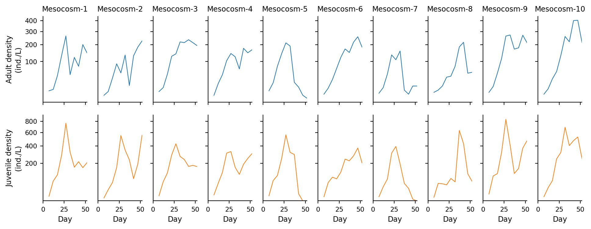
Mechanistic Model
Model Specification
The SRJF model describes the dynamics of susceptible adults (\(S^n_u\)), juveniles (\(J^n_u\)), and the latent algal food resource (\(F_u\)), where the superscript \(n\) denotes the native species D. dentifera. Dead or removed individuals transition to the unobserved compartment \(R\).
The latent process satisfies the following system of stochastic differential equations:
\[\begin{aligned} dS^n_u(t) &= \lambda^n_J J^n_u(t)\,dt - (\theta^n_S + \delta) S^n_u(t)\,dt + S^n_u(t)\,d\zeta^n_{S,u}(t), \\ dJ^n_u(t) &= r^n f^n_S F_u(t) S^n_u(t)\,dt - (\theta^n_J + \delta + \lambda^n_J) J^n_u(t)\,dt + J^n_u(t)\,d\zeta^n_{J,u}(t), \\ dF_u(t) &= - f^n_S F_u(t)\,\big(S^n_u(t) + \xi_J J^n_u(t)\big)\,dt - \delta F_u(t)\,dt + \mu\,dt + F_u(t)\,d\zeta_{F,u}(t), \end{aligned}\]
where the stochastic increments are Gaussian white noise:
\[d\zeta^n_{S,u}(t) \sim \mathcal{N}\!\big(0,(\sigma^n_S)^2\,dt\big), \quad d\zeta^n_{J,u}(t) \sim \mathcal{N}\!\big(0,(\sigma^n_J)^2\,dt\big), \quad d\zeta_{F,u}(t) \sim \mathcal{N}\!\big(0,\sigma^2_F\,dt\big).\]
These equations correspond to the SRJF formulation in Section S9 of the Supplement, specialised to the single-species case.
Biological Mechanisms
The SRJF model encodes three coupled ecological processes. Reproduction and maturation are resource-limited: adults produce juveniles at rate \(r^n f^n_S F_u(t) S^n_u(t)\), where the birth efficiency \(r^n\) converts ingested algae into offspring and \(f^n_S\) is the adult filtration rate. Juveniles transition to the adult class at rate \(\lambda^n_J\). Resource competition is exploitative: both adults and juveniles filter algae from the medium, with juveniles consuming at a rate scaled by \(\xi_J\), and algae are replenished at constant rate \(\mu\) following the Searle et al. (2016) protocol. Mortality arises from natural causes (rates \(\theta^n_S\), \(\theta^n_J\)) and from experimental sampling at rate \(\delta\).
The complete flow diagram illustrating these transitions is provided in Figure S20 of the Supplement to the main text.
Parameter Specification
The full parameter table for the SRJF model is given in Tables S10 and S11 of the Supplement (for D. dentifera and D. lumholtzi, respectively). The parameters used here are:
- \(r^n\): birth rate coefficient (juveniles \(\cdot\) individual\(^{-1}\) \(\cdot\) cell\(^{-1}\) \(\cdot\) day\(^{-1}\)).
- \(f^n_S\): adult filtration rate (L \(\cdot\) individual\(^{-1} \cdot\) day\(^{-1}\)).
- \(\xi_J\): juvenile filtration ratio relative to adults (dimensionless).
- \(\lambda^n_J\): juvenile maturation rate (day\(^{-1}\)).
- \(\theta^n_S\), \(\theta^n_J\): natural mortality rates for adults and juveniles (day\(^{-1}\)).
- \(\delta\): sampling/dilution rate (day\(^{-1}\)).
- \(\mu\): algal replenishment rate (\(10^6\) cells \(\cdot\) L\(^{-1} \cdot\) day\(^{-1}\)).
- \(\sigma^n_S\), \(\sigma^n_J\), \(\sigma_F\): process noise standard deviations.
- \(\tau^n_S\): measurement overdispersion parameter (negative binomial).
Several parameters are fixed from the experimental protocol: \(\delta = 0.013\) day\(^{-1}\) (one-litre sampling out of a fixed mesocosm volume), \(\mu = 0.37 \times 10^6\) cells \(\cdot\) L\(^{-1} \cdot\) day\(^{-1}\) (twice-weekly algal supplementation), \(\lambda^n_J = 0.1\) day\(^{-1}\) (approximating a 10-day maturation period), and \(\xi_J = 1\) (assuming similar filtration efficiency for juveniles and adults) (Ebert 2005; Searle et al. 2016).
As discussed in Section S9 of the Supplement, profile-likelihood identifiability analysis indicates that the adult susceptible noise (\(\sigma^n_S\)) can be fixed at zero without substantively affecting model fit, whereas \(\sigma^n_J\) and \(\sigma_F\) remain statistically resolved. Complete parameter estimates and MCAP confidence intervals are reported in Tables S10 and S11.
PanelPOMP Implementation Framework
The next several subsections define the model’s plug-and-play components: rproc, rinit, dmeas, rmeas, and partrans. Each component is a short, self-contained Python callable.
Process Model Simulator
The rproc component simulates the latent SRJF dynamics. This plug-and-play interface requires only the ability to simulate one Euler step from the process model, never to evaluate transition densities. We discretize the continuous-time SDE with step \(\Delta t = 0.25\) days—small enough to control discretization bias while leaving the particle-filter and iterated-filtering inner loops cheap enough to repeat thousands of times.
The callable below implements one Euler–Maruyama step: independent Gaussian innovations with variances \((\sigma^n_S)^2 \Delta t\), \((\sigma^n_J)^2 \Delta t\), \(\sigma^2_F \Delta t\) are drawn and combined with the deterministic increments of the SRJF equations. Following Ebert (2005), the fixed experimental constants \(\delta = 0.013\), \(\mu = 0.37\), \(\lambda^n_J = 0.1\), and \(\xi_J = 1\) are written directly into the function body.
After updating \(S^n_u\), \(J^n_u\), and \(F_u\), the simulator applies the same numerical guard used for the production fits: any state below zero or above its declared upper bound is reset to zero and increments an error_count accumulator. The measurement model converts any positive error_count into a \(-150\) log-likelihood penalty for that observation. This reset-and-penalise rule is part of the fitted transition model; replacing it with upper clipping would define a different model. The non-negative quantity \(T^n_S = |S^n_u|\) is exposed for the measurement model.
Show Euler-Maruyama process simulator
# State variables tracked by the process model. `error_count` is reset at every
# observation time via Pypomp's `accumvars` mechanism.
STATENAMES = ["Sn", "Jn", "F", "T_Sn", "error_count"]
# Canonical parameter ordering used throughout this section.
PARAM_NAMES = ["rn", "f_Sn", "theta_Sn", "theta_Jn",
"sigSn", "sigJn", "sigF", "k_Sn"]
def srjf_rproc(X_, theta_, key, covars, t, dt):
"""One Euler-Maruyama step for the SRJF model."""
Sn, Jn, F = X_["Sn"], X_["Jn"], X_["F"]
error_count = X_["error_count"]
sigSn, sigJn, sigF = theta_["sigSn"], theta_["sigJn"], theta_["sigF"]
theta_Sn, theta_Jn = theta_["theta_Sn"], theta_["theta_Jn"]
rn, f_Sn = theta_["rn"], theta_["f_Sn"]
# Fixed experimental constants
delta = 0.013 # sampling/dilution rate (day^-1)
mu_food = 0.37 # algal replenishment (10^6 cells L^-1 day^-1)
lambda_J = 0.1 # juvenile maturation rate (day^-1)
xi_J = 1.0 # juvenile filtration ratio
# Independent Gaussian innovations with SD * sqrt(dt)
k1, k2, k3 = jax.random.split(key, 3)
sqdt = jnp.sqrt(dt)
noiSn = sigSn * sqdt * jax.random.normal(k1)
noiJn = sigJn * sqdt * jax.random.normal(k2)
noiF = sigF * sqdt * jax.random.normal(k3)
# Deterministic + stochastic increments
Sn_term = (lambda_J * Jn * dt
- theta_Sn * Sn * dt
- delta * Sn * dt
+ Sn * noiSn)
Jn_term = (rn * f_Sn * F * Sn * dt
- lambda_J * Jn * dt
- theta_Jn * Jn * dt
- delta * Jn * dt
+ Jn * noiJn)
F_term = (-f_Sn * F * (Sn + xi_J * Jn) * dt
- delta * F * dt
+ mu_food * dt
+ F * noiF)
Sn_new = Sn + Sn_term
Jn_new = Jn + Jn_term
F_new = F + F_term
# Production reset rule, written with jnp.where for JIT compatibility.
Sn_violated = (Sn_new < 0.0) | (Sn_new > 1e5)
Jn_violated = (Jn_new < 0.0) | (Jn_new > 1e5)
F_violated = (F_new < 0.0) | (F_new > 1e20)
Sn_new = jnp.where(Sn_violated, 0.0, Sn_new)
Jn_new = jnp.where(Jn_violated, 0.0, Jn_new)
F_new = jnp.where(F_violated, 0.0, F_new)
error_count_new = (error_count
+ jnp.where(Sn_violated, 1.0, 0.0)
+ jnp.where(Jn_violated, 0.001, 0.0)
+ jnp.where(F_violated, 1000.0, 0.0))
# Non-negative observable consumed by the measurement model.
T_Sn_new = jnp.abs(Sn_new)
return {
"Sn": Sn_new,
"Jn": Jn_new,
"F": F_new,
"T_Sn": T_Sn_new,
"error_count": error_count_new,
}The error_count accumulator implements the soft-constraint mechanism just described: parameter values that frequently produce biologically implausible trajectories accumulate penalties that manifest as reduced likelihood values during optimisation.
Initial State Specification
Particle filters require initial states that are biologically consistent with the experimental protocol. We set \(t_{u,0} = 1\), matching the production analysis and giving a six-day pre-observation integration window before the first sample at day \(7\). At \(t_0\), \(S^n_u(t_0) = 3\) ind./L (45 adults released into a 15 L mesocosm), \(J^n_u(t_0) = 0\), and \(F_u(t_0) = 16.667 \times 10^6\) cells/L (an initial \(2.5 \times 10^8\) cells in a 15 L volume). The accumulator error_count and the measurement variable \(T^n_S\) are initialised to zero.
Show initial-state specification
def srjf_rinit(theta_, key, covars, t0):
"""Deterministic initial conditions, identical across units."""
return {
"Sn": jnp.array(3.0),
"Jn": jnp.array(0.0),
"F": jnp.array(16.667),
"T_Sn": jnp.array(0.0),
"error_count": jnp.array(0.0),
}These initial conditions are shared across units. Between-unit variability in the latent state arises solely from the stochastic dynamics in srjf_rproc.
Measurement Model
The measurement model connects the latent adult density \(S^n_u(t_n)\) to the observed count \(N^n_{S,u,n}\) via a negative binomial distribution: \[N^n_{S,u,n} \mid S^n_u(t_n) \sim \text{NBinomial}\big(S^n_u(t_n), \tau^n_S\big),\] parameterised with mean \(\mu = S^n_u(t_n)\) and variance \(\mu + \mu^2/\tau^n_S\). The dispersion \(\tau^n_S > 0\) quantifies overdispersion, with smaller values indicating greater variance relative to the mean. This specification accommodates the substantial count variability common in ecological sampling, arising from both demographic stochasticity and measurement error.
The measurement density evaluates to \[f_{Y_{u,n}|X_{u,n}}(y^*_{u,n} \mid x_{u,n}; \theta) = f_{\text{NBinomial}}\big(y^*_{u,n}; S^n_u(t_n), \tau^n_S\big),\] corresponding to equation (8) of the main text. Trajectories flagged by error_count > 0 have their log-likelihood replaced by the constant penalty \(-150\), which removes them from consideration in the particle filter while avoiding the numerical instabilities associated with \(-\infty\).
We use \(\tau^n_S\) directly as the size parameter (equivalently, the parameter k_Sn in code) of the NB mean–dispersion parameterisation. The log-pmf is computed via gammaln because jax.scipy.stats.nbinom.logpmf uses the \((n, p)\) parameterisation and expects integer counts, both awkward inside a JIT-compiled particle filter.
Show measurement log-density (negative binomial)
def srjf_dmeas(Y_, X_, theta_, covars, t):
"""Negative binomial log-pmf of dent.adult given latent S^n."""
y = Y_["dentadult"]
mu = jnp.maximum(X_["T_Sn"], 1e-10)
size = jnp.maximum(theta_["k_Sn"], 1e-10)
error_count = X_["error_count"]
ll = (jax.scipy.special.gammaln(y + size)
- jax.scipy.special.gammaln(size)
- jax.scipy.special.gammaln(y + 1.0)
+ size * jnp.log(size / (size + mu))
+ y * jnp.log(mu / (size + mu)))
# Soft penalty: replace ll on biologically implausible trajectories.
return jnp.where(error_count > 0.0, -150.0, ll)The srjf_rmeas component simulates \(\tilde{N}^n_{S,u,n} \sim \text{NBinomial}(S^n_u(t_n), \tau^n_S)\) as a Gamma–Poisson mixture, which JAX supports natively.
Show measurement sampler
def srjf_rmeas(X_, theta_, key, covars, t):
"""Sample dent.adult ~ NBinomial(mean = T_Sn, size = k_Sn)."""
mu = jnp.maximum(X_["T_Sn"], 1e-10)
size = jnp.maximum(theta_["k_Sn"], 1e-10)
k1, k2 = jax.random.split(key)
scale = mu / size
gamma_sample = jax.random.gamma(k1, size) * scale
obs = jax.random.poisson(k2, gamma_sample)
return jnp.array([obs], dtype=float)Parameter Transformations
To ensure biological plausibility and improve numerical stability during optimisation, log transformations map the constrained space \(\Theta^+ = \{\theta : \theta_i > 0\}\) to \(\mathbb{R}^p\), so the iterated filter can apply Gaussian perturbations without violating positivity: \[\tilde{\theta}_i = \log(\theta_i) \quad \text{for} \quad \theta_i \in \{r^n, f^n_S, \theta^n_S, \theta^n_J, \sigma^n_J, \sigma_F, \tau^n_S\}.\] During iterated filtering, the perturbation is applied to \(\tilde{\theta}\) via additive Gaussian noise. Parameters are back-transformed to the natural scale via \(\theta_i = \exp(\tilde{\theta}_i)\) before evaluating srjf_rproc or srjf_dmeas. The scheme is scale-invariant—relative steps scale with parameter magnitude—and prevents numerical underflow as parameters approach zero.
Because \(\sigma^n_S \equiv 0\) (see the parameter discussion above), it is not log-transformed. The remaining seven parameters are mapped through jnp.log / jnp.exp.
Show parameter transformations (log)
# Parameters that are strictly positive and benefit from log-transform.
_LOG_PARAMS = ("rn", "f_Sn", "theta_Sn", "theta_Jn",
"sigJn", "sigF", "k_Sn")
def srjf_to_est(theta):
"""Natural -> estimation scale (log for positive params)."""
out = {**theta}
for name in _LOG_PARAMS:
out[name] = jnp.log(jnp.maximum(theta[name], 1e-30))
# sigSn is fixed at 0; pass through untransformed.
out["sigSn"] = theta["sigSn"]
return out
def srjf_from_est(theta):
"""Estimation -> natural scale."""
out = {**theta}
for name in _LOG_PARAMS:
out[name] = jnp.exp(theta[name])
out["sigSn"] = theta["sigSn"]
return out
srjf_par_trans = pp.ParTrans(to_est=srjf_to_est, from_est=srjf_from_est)Initial Parameter Values and PanelPomp Construction
We construct one Pomp object per replicate \(u \in \{A, B, \ldots, J\}\). Each unit shares the same model components (rinit, rproc, dmeasure, rmeasure, partrans) and differs only in its observed time series. The sampling grid is uniform across replicates—ten observations at days \(7, 12, \ldots, 52\)—and the simulation initial time \(t_0 = 1\) leaves a six-day pre-observation integration window before the first likelihood evaluation. The integration step \(\Delta t = 0.25\) days is passed to pp.Pomp via dt=0.25, and error_count is reset to zero at every observation time via the accumvars argument.
Following the model selection analysis in Section S9 of the Supplement (Tables S10–S12), all SRJF parameters are shared across units: \(\theta = \phi\) with \(\psi_u = \emptyset\) for all \(u\).
Code
# Validated production SRJF estimate used as the common starting point.
srjf_shared_theta = {
"rn": 1.690848e+03,
"f_Sn": 1.318825e-04,
"theta_Sn": 6.917602e-01,
"theta_Jn": 2.129469e-08,
"sigSn": 0.0,
"sigJn": 3.073899e-01,
"sigF": 9.309179e-07,
"k_Sn": 1.335195e+01,
}
unit_names = ['A', 'B', 'C', 'D', 'E', 'F', 'G', 'H', 'I', 'J']
t0_srjf = 1.0 # First observation is at day 7 -> 6-day pre-observation integration window.
srjf_pomp_dict = {}
for u in unit_names:
sub = (srjf_data[srjf_data['rep'] == u][['day', 'dent.adult']]
.rename(columns={'dent.adult': 'dentadult'})
.sort_values('day'))
ys_u = sub.set_index('day')[['dentadult']].astype(float)
srjf_pomp_dict[u] = pp.Pomp(
ys=ys_u,
theta=pp.PompParameters(srjf_shared_theta),
statenames=STATENAMES,
t0=t0_srjf,
rinit=srjf_rinit,
rproc=srjf_rproc,
dmeas=srjf_dmeas,
rmeas=srjf_rmeas,
par_trans=srjf_par_trans,
dt=0.25,
accumvars=("error_count",),
)In Pypomp, the PanelPomp constructor expects a theta dictionary with 'shared' and 'unit_specific' DataFrames. With an all-shared parameterisation there are no unit-specific entries, but the PanelPomp validator reads unit names from the columns of unit_specific. We therefore pass an empty DataFrame whose columns are the unit names (zero rows) to register the panel structure. This is an edge case of the all-shared parameterisation.
Show PanelPomp object construction
# Shared parameters: phi (all units use identical values).
srjf_shared_df = pd.DataFrame(
{"shared": list(srjf_shared_theta.values())},
index=list(srjf_shared_theta.keys()),
)
# Empty unit_specific DataFrame whose columns register the unit names.
# Pypomp reads unit names from `unit_specific.columns`; passing `None`
# causes the validator to return an empty list and refuse the panel.
srjf_unit_specific_df = pd.DataFrame(index=[], columns=unit_names)
panelfood = pp.PanelPomp(
Pomp_dict=srjf_pomp_dict,
theta=pp.PanelParameters(
{"shared": srjf_shared_df, "unit_specific": srjf_unit_specific_df}
),
)
print(f"Number of units: {len(panelfood.unit_objects)}")
print(f"Shared parameters: {panelfood.canonical_shared_param_names}")Number of units: 10
Shared parameters: ['rn', 'f_Sn', 'theta_Sn', 'theta_Jn', 'sigSn', 'sigJn', 'sigF', 'k_Sn']The resulting panelfood object represents the complete PanelPOMP model with \(U = 10\) units, each evolving under SRJF dynamics with common parameter vector \(\phi\). Eight model entries are carried, but sigSn = 0 is fixed, so the fitted all-shared dimension is \(p = 7\).
Smoke check
Particle filters are sensitive to parameter scaling, especially when parameters span many orders of magnitude. To confirm that the constructed object is correctly scaled, we run a quick particle filter at the development run level and inspect the per-unit log-likelihoods.
Code
def _run_srjf_smoke():
panel = pp.PanelPomp(
Pomp_dict=srjf_pomp_dict,
theta=pp.PanelParameters(panelfood.theta),
)
panel.pfilter(J=RL["J_eval"], reps=RL["pf_reps"], key=jax.random.key(0))
return np.asarray(panel.results_history[-1].logLiks.values)
ll_arr = cached("srjf_smoke_pfilter", _run_srjf_smoke) # (theta_idx, unit, rep)
ll_per_unit_all, ll_per_unit_se_all, panel_ll_all, panel_ll_se_all = (
summarize_panel_loglik(ll_arr)
)
ll_per_unit = ll_per_unit_all[0]
print(f"panel pfilter wall: {TIMINGS['srjf_smoke_pfilter']:.2f}s "
f"(J={RL['J_eval']}, reps={RL['pf_reps']})")
print("Per-unit log-likelihood (log-mean-exp over replicates):")
for u, v in zip(unit_names, ll_per_unit):
print(f" {u}: {v:8.3f}")
print(f"Total panel logLik: {float(panel_ll_all[0]):.3f} "
f"(MCSE {float(panel_ll_se_all[0]):.3f})")panel pfilter wall: 1.02s (J=50, reps=3)
Per-unit log-likelihood (log-mean-exp over replicates):
A: -53.327
B: -51.966
C: -51.484
D: -48.567
E: -47.601
F: -48.334
G: -51.300
H: -45.972
I: -52.862
J: -51.799
Total panel logLik: -503.212 (MCSE 2.349)A correctly scaled panel produces stable per-unit log-likelihoods on the order of \(-50\) for SRJF data and a substantial effective sample size (ESS) at every observation time. Deliberately mis-scaled parameter vectors—perturbing rates by several orders of magnitude—would by contrast yield degenerate filters whose ESS collapses toward unity, with particle weights dominated by a single trajectory. The mis-scaled counter-example below quantifies this contrast.
If the pfilter output looks pathological (very negative per-unit log-likelihoods with high Monte Carlo variance), four checks usually localise the problem: (i) parameter units in the simulator (day\(^{-1}\), ind./L, etc.) are consistent with those of the data, (ii) dimensional and dimensionless parameters have biologically plausible magnitudes, (iii) srjf_par_trans correctly applies log transforms to all positive-valued parameters, and (iv) srjf_rinit returns initial densities consistent with the experimental protocol. Mis-scaled starting points can prevent iterated filtering from locating the MLE even with a correct algorithm, because the optimisation can become trapped in regions where numerical instability precludes accurate likelihood evaluation.
Mis-scaled counter-example
The numerical pathologies of parameter mis-specification are most easily seen empirically. We compare particle-filter performance between the well-scaled panelfood (the initial-guess panel from the smoke check above) and a deliberately corrupted panelfood_wrong whose adult filtration rate \(f^n_S\) has been multiplied by \(100\). The comparison uses initial parameters rather than an MLE because the mis-scaling pathology appears regardless of starting point: a mis-specified filtration rate destabilises the filter even at otherwise-reasonable parameter values.
Code
# Build a panel with a deliberately mis-scaled f_Sn (100x too large).
wrong_theta = dict(srjf_shared_theta)
wrong_theta["f_Sn"] = wrong_theta["f_Sn"] * 100.0
wrong_shared_keys = [k for k in wrong_theta if k != "sigSn"]
wrong_shared_df = pd.DataFrame(
{"shared": [wrong_theta[k] for k in wrong_shared_keys]},
index=wrong_shared_keys,
)
wrong_unit_df = pd.DataFrame(
{u: [0.0] for u in unit_names},
index=["sigSn"],
)
panelfood_wrong = pp.PanelPomp(
Pomp_dict=srjf_pomp_dict,
theta=pp.PanelParameters(
{"shared": wrong_shared_df, "unit_specific": wrong_unit_df}
),
)
# Replicated pfilter at the well-scaled initial guess (same `panelfood` the
# smoke check used above) and at the mis-scaled variant.
def _run_srjf_scaling():
panel_correct = pp.PanelPomp(
Pomp_dict=srjf_pomp_dict,
theta=pp.PanelParameters(panelfood.theta),
)
panel_wrong = pp.PanelPomp(
Pomp_dict=srjf_pomp_dict,
theta=pp.PanelParameters(panelfood_wrong.theta),
)
panel_correct.pfilter(
J=RL["J_eval"], reps=RL["pf_reps"], key=jax.random.key(801)
)
correct = np.asarray(panel_correct.results_history[-1].logLiks.values)
panel_wrong.pfilter(
J=RL["J_eval"], reps=RL["pf_reps"], key=jax.random.key(801)
)
wrong = np.asarray(panel_wrong.results_history[-1].logLiks.values)
return {"correct": correct, "wrong": wrong}
scaling_out = cached("srjf_scaling_diagnostic", _run_srjf_scaling)
ll_correct = scaling_out["correct"] # (1, U, reps)
ll_wrong = scaling_out["wrong"]
unit_ll_correct_all, unit_se_correct_all, panel_ll_correct_all, panel_se_correct_all = (
summarize_panel_loglik(ll_correct)
)
unit_ll_wrong_all, unit_se_wrong_all, panel_ll_wrong_all, panel_se_wrong_all = (
summarize_panel_loglik(ll_wrong)
)
unit_ll_correct = unit_ll_correct_all[0]
unit_se_correct = unit_se_correct_all[0]
panel_ll_correct = float(panel_ll_correct_all[0])
panel_se_correct = float(panel_se_correct_all[0])
unit_ll_wrong = unit_ll_wrong_all[0]
unit_se_wrong = unit_se_wrong_all[0]
panel_ll_wrong = float(panel_ll_wrong_all[0])
panel_se_wrong = float(panel_se_wrong_all[0])
print("Well-scaled initial parameters:")
print(f" Panel log-likelihood: {panel_ll_correct:.2f} "
f"(MCSE: {panel_se_correct:.2f})")
print(f" Unit-level mean range: "
f"[{np.nanmin(unit_ll_correct):.2f}, "
f"{np.nanmax(unit_ll_correct):.2f}]")
print()
print("Mis-scaled parameters (f_Sn x 100):")
print(f" Panel log-likelihood: {panel_ll_wrong:.2f} "
f"(MCSE: {panel_se_wrong:.2f})")
print(f" Unit-level mean range: "
f"[{np.nanmin(unit_ll_wrong):.2f}, "
f"{np.nanmax(unit_ll_wrong):.2f}]")
print()
print(f"Log-likelihood difference: "
f"{panel_ll_correct - panel_ll_wrong:.2f}")Well-scaled initial parameters:
Panel log-likelihood: -507.96 (MCSE: 1.15)
Unit-level mean range: [-54.99, -45.83]
Mis-scaled parameters (f_Sn x 100):
Panel log-likelihood: -2486.57 (MCSE: 4.78)
Unit-level mean range: [-306.88, -218.12]
Log-likelihood difference: 1978.60The well-scaled initial parameters yield a finite panel log-likelihood with small Monte Carlo standard error, indicating stable filter performance. Mis-scaling generates severely degraded likelihood values: an \(f^n_S\) that is too large drives the algal resource \(F_u\) rapidly toward zero, starving the Daphnia population and producing simulated trajectories far below the observed adult densities. The mismatch surfaces as much more negative per-unit log-likelihoods and as inflated Monte Carlo variance, because the particle weights become dominated by a small fraction of trajectories.
The figure below plots the unit-level contributions side by side.
Code
fig, axes = plt.subplots(1, 2, figsize=(10, 4), sharey=False)
unit_means_correct = unit_ll_correct
unit_means_wrong = unit_ll_wrong
axes[0].bar(unit_names, unit_means_correct, color=PALETTE["adult"])
axes[0].axhline(
np.nanmean(unit_means_correct),
color=PALETTE["fit"],
linestyle="--",
linewidth=1.5
)
axes[0].set_title(
"Well-scaled initial parameters",
fontsize=FONTS["panel_title"]
)
axes[0].set_ylabel("Unit log-likelihood", fontsize=FONTS["axis_label"])
axes[0].set_xlabel("Unit", fontsize=FONTS["axis_label"])
axes[0].tick_params(axis="both", labelsize=FONTS["tick"])
axes[1].bar(unit_names, unit_means_wrong, color=PALETTE["warn"])
axes[1].axhline(
np.nanmean(unit_means_wrong),
color=PALETTE["fit"],
linestyle="--",
linewidth=1.5
)
axes[1].set_title("Mis-scaled parameters", fontsize=FONTS["panel_title"])
axes[1].set_ylabel("Unit log-likelihood", fontsize=FONTS["axis_label"])
axes[1].set_xlabel("Unit", fontsize=FONTS["axis_label"])
axes[1].tick_params(axis="both", labelsize=FONTS["tick"])
fig.tight_layout()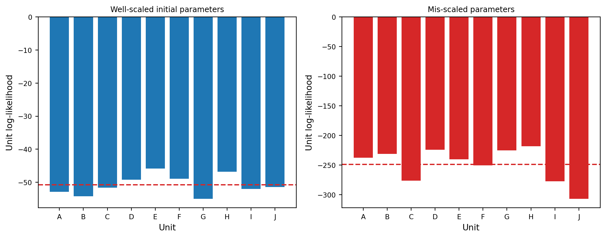
Under well-scaled initial parameters, unit-level log-likelihoods exhibit moderate variation reflecting stochastic differences between trajectories. Under mis-scaling the contributions become sharply more negative across all units, indicating uniform failure to track the data. The between-unit variation under mis-scaling is also amplified, because units whose realised trajectories are more sensitive to \(f^n_S\) collapse harder than those that happen to be more robust. This second-order effect is a useful tell-tale: mis-scaling shifts the mean unit-level log-likelihood downward and broadens its dispersion in a way that genuine parameter heterogeneity does not.
The well-scaled panel filters cleanly and mis-scaling is detectable rather than silent, so we proceed to maximum-likelihood estimation. The next subsection sets the algorithmic budget and perturbation scheme that the MIF call inherits.
Algorithmic Parameters and Perturbation
Panel iterated filtering (PIF) extends IF2 to panel data by coupling a coordinated random walk in parameter space with simultaneous filtering of all \(U\) units (Bretó, Ionides, and King 2020). At iteration \(m \in 1{:}M\), each particle \(j\) carries a parameter value \(\phi^{(m)}_j\) that is perturbed before each observation by a Gaussian random walk with increments whose variance is multiplied by a geometric cooling factor, \(a^{2m/50}\), with \(a < 1\) being the cooling fraction in 50 iterations. Pseudocode for PIF and its marginalised variant MPIF appears as Section S2 of the Supplement.
The compute budget is set by the RUN_LEVELS table in the global setup chunk. Independent controls are used for MIF particles and iterations, the number of starts, and the particles and replicates used for final likelihood evaluation. This separation prevents the scientific search effort from changing accidentally with a plotting or Monte Carlo-summary setting.
Code
# All MIF/pfilter calls in this section read their compute budget from RL,
# the run-level dictionary set in the global-setup chunk. Editing run_level
# at the top of the document propagates here without further changes.
J_mif = RL["J"]
M_mif = RL["Nmif"]
Nstarts = RL["n_starts"]
J_pf_eval = RL["J_eval"]
Npf_reps = RL["pf_reps"]
print(f"MIF compute budget: J={J_mif}, M={M_mif}, Nstarts={Nstarts}")
print(f"Final pfilter eval: J={J_pf_eval}, reps={Npf_reps}")MIF compute budget: J=20, M=5, Nstarts=2
Final pfilter eval: J=50, reps=3The random-walk perturbation \(\sigma_{\mathrm{rw}}\) controls parameter exploration during MIF. Larger values promote exploration but slow convergence and can prevent settling near a local maximum. Smaller values promote local refinement but risk premature convergence. Because srjf_par_trans log-transforms every positive parameter, the perturbation is applied on the log scale, so a single value \(\sigma_{\mathrm{rw}} = 0.02\) produces proportionally comparable steps for parameters spanning many orders of magnitude (e.g., \(r^n \sim 10^3\) vs. \(f^n_S \sim 10^{-4}\)). We pass an RWSigma object listing the seven log-perturbed parameters. The parameter sigSn is held at zero (Section S9 of the Supplement) so its random-walk standard deviation is also zero.
Code
dent_rw_sd = 0.02
# RWSigma must list every canonical parameter (Pypomp checks set equality).
# Setting sigSn=0 keeps it fixed at its initial value during MIF.
srjf_rw_sd = pp.RWSigma(
sigmas={
"rn": dent_rw_sd,
"f_Sn": dent_rw_sd,
"theta_Sn": dent_rw_sd,
"theta_Jn": dent_rw_sd,
"sigSn": 0.0,
"sigJn": dent_rw_sd,
"sigF": dent_rw_sd,
"k_Sn": dent_rw_sd,
},
init_names=[],
).geometric_cooling(0.7)Parameter Estimation via Panel Iterated Filtering
Maximum likelihood estimation for PanelPOMP models is a non-convex problem with multiple local maxima. To mitigate convergence to a local maximum, we run several independent MIF chains from the same starting parameter vector but with different RNG seeds. The run achieving the highest final likelihood is taken as the candidate MLE.
In Pypomp, this multi-start search is expressed by replicating the panel-parameter object before calling mif: each replicate of panel.theta becomes one independent chain, and a single call to panel.mif(...) advances all chains in parallel under JAX. After MIF, a final particle filter on the terminal estimates yields a low-variance evaluation of \(\log L(\hat\phi^{(M)})\).
The current Pypomp API supports a genuinely all-shared parameterization. The fixed parameter sigSn remains in the shared block with random-walk standard deviation zero; it is neither estimated nor used as an artificial unit-specific placeholder.
Code
# Build a genuinely all-shared parameter object. sigSn is carried as a fixed
# model entry but excluded from the free-parameter count.
shared_keys_srjf = list(srjf_shared_theta)
srjf_panel_shared_df = pd.DataFrame(
{"shared": [srjf_shared_theta[k] for k in shared_keys_srjf]},
index=shared_keys_srjf,
)
srjf_panel_unit_df = pd.DataFrame(index=[], columns=unit_names)
srjf_panel_theta_multi = make_panel_starts(
srjf_panel_shared_df,
srjf_panel_unit_df,
Nstarts,
seed=100,
fixed=("sigSn",),
)
def _run_srjf_mif():
"""Run MIF + final pfilter and return what the figures and tables need."""
panel = pp.PanelPomp(
Pomp_dict=srjf_pomp_dict, theta=srjf_panel_theta_multi,
)
panel.mif(
J=J_mif, M=M_mif, rw_sd=srjf_rw_sd,
block=True,
key=jax.random.key(101),
)
panel.pfilter(
J=J_pf_eval, reps=Npf_reps, key=jax.random.key(202),
)
return {
"ll_arr": np.asarray(panel.results_history[-1].logLiks.values),
"traces": panel.traces(),
"final_theta": panel.theta.params(as_list=True),
}
mif_out = cached("srjf_mif_search", _run_srjf_mif)
mif_ll_arr = mif_out["ll_arr"] # (Nstarts, U, reps)
mif_traces = mif_out["traces"]
unit_ll_per_start, unit_se_per_start, panel_ll_per_start, panel_se_per_start = (
summarize_panel_loglik(mif_ll_arr)
)
best_idx = int(np.nanargmax(panel_ll_per_start))
best_ll = float(panel_ll_per_start[best_idx])
best_ll_se = float(panel_se_per_start[best_idx])
unit_ll_best = unit_ll_per_start[best_idx]
best_theta_dict = mif_out["final_theta"][best_idx]
mle_shared_df = best_theta_dict["shared"]
srjf_mif_candidate_theta = {**srjf_shared_theta}
for name in mle_shared_df.index:
srjf_mif_candidate_theta[name] = float(mle_shared_df.loc[name, "shared"])
srjf_mif_candidate_ll = best_ll
srjf_mif_candidate_se = best_ll_se
srjf_start_ll = float(panel_ll_all[0])
srjf_start_se = float(panel_ll_se_all[0])
mif_summary = pd.DataFrame({
"start": np.arange(Nstarts),
"panel_logLik": panel_ll_per_start,
"MCSE": panel_se_per_start,
})
agreement_tol = np.maximum(
1.0,
2.0 * np.sqrt(
panel_se_per_start**2 + srjf_mif_candidate_se**2
),
)
srjf_converged = int(np.sum(
srjf_mif_candidate_ll - panel_ll_per_start <= agreement_tol
)) >= min(3, Nstarts)
srjf_search_not_worse = (
srjf_mif_candidate_ll +
2.0 * np.sqrt(srjf_mif_candidate_se**2 + srjf_start_se**2)
>= srjf_start_ll
)
srjf_search_valid = srjf_converged and srjf_search_not_worse
if srjf_search_valid:
srjf_mle_theta = dict(srjf_mif_candidate_theta)
else:
# A smoke-level MIF run can move away from the archived production MLE.
# Downstream nested comparisons and profiles must not be based on a
# demonstrably worse terminal point, so retain the production vector.
srjf_mle_theta = dict(srjf_shared_theta)
best_ll = srjf_start_ll
best_ll_se = srjf_start_se
srjf_mle_panel_theta = pp.PanelParameters({
"shared": pd.DataFrame(
{"shared": [srjf_mle_theta[k] for k in shared_keys_srjf]},
index=shared_keys_srjf,
),
"unit_specific": pd.DataFrame(index=[], columns=unit_names),
})
print(f"MIF + final pfilter wall: {TIMINGS['srjf_mif_search']:.1f}s")
print(mif_summary.to_string(index=False))
print(f"Best MIF start: {best_idx}, panel logLik = "
f"{srjf_mif_candidate_ll:.2f} (MCSE {srjf_mif_candidate_se:.2f})")
print(f"Multi-start convergence gate: {'PASS' if srjf_converged else 'FAIL'}")
print(f"Non-degradation gate: {'PASS' if srjf_search_not_worse else 'FAIL'}")
print(
"Downstream baseline: "
+ ("validated MIF candidate" if srjf_search_valid
else "archived production parameter vector")
)
srjf_reference_ll = -498.7808
srjf_reference_se = 0.324
srjf_reference_gap_se = float(np.sqrt(
best_ll_se**2 + srjf_reference_se**2
))
srjf_reproduces = (
abs(best_ll - srjf_reference_ll)
<= max(1.0, 2.0 * srjf_reference_gap_se)
)
print(f"Production-likelihood gate: {'PASS' if srjf_reproduces else 'FAIL'}")
print("\nSelected all-shared baseline parameters:")
for k in PARAM_NAMES:
print(f" {k:>10s}: {srjf_mle_theta[k]:.6g}")MIF + final pfilter wall: 2.3s
start panel_logLik MCSE
0 -552.504006 3.055357
1 -522.838844 6.466737
Best MIF start: 1, panel logLik = -522.84 (MCSE 6.47)
Multi-start convergence gate: FAIL
Non-degradation gate: FAIL
Downstream baseline: archived production parameter vector
Production-likelihood gate: PASS
Selected all-shared baseline parameters:
rn: 1690.85
f_Sn: 0.000131883
theta_Sn: 0.69176
theta_Jn: 2.12947e-08
sigSn: 0
sigJn: 0.30739
sigF: 9.30918e-07
k_Sn: 13.352The best terminal parameter vector is used downstream only when the multi-start agreement and non-degradation gates pass. Otherwise, as is common at the smoke-test run level, the tutorial retains the archived production parameter vector so that a deliberately cheap search cannot corrupt the nested-model and profile demonstrations. Two clarifications on the call:
- Cooling is configured on
RWSigma. Calling.geometric_cooling(0.7)makes 0.7 the multiplicative reduction in perturbation standard deviation accumulated over fifty iterations. block=Trueselects MPIF. Current Pypomp also implementsblock=Falsefor PIF. The distinction concerns resampling of unit-specific parameter particles; for an all-shared model the two algorithms are identical under matched randomness.
The unit-specific evidence diagnostic below illustrates a mixed parameterisation in which a subset of parameters varies by unit. The all-shared model just estimated serves as the parsimonious baseline against which the unit-specific variant is compared via AIC.
Fit diagnostic: evidence for unit-specific parameterisation
To assess whether unit-specific parameterisation of adult mortality \(\theta^n_S\) is statistically justified, we follow a three-step workflow: (i) examine the unit-level log-likelihood contributions under the all-shared MLE just obtained, (ii) re-estimate the model with \(\theta^n_{S,u}\) allowed to vary by unit, and (iii) compare the two via AIC. Substantial heterogeneity in unit-level log-likelihoods under the all-shared model is a necessary but not sufficient signal of true between-unit heterogeneity. Only the AIC comparison can adjudicate whether the apparent gap is real or absorbed by Monte Carlo noise.
Code
# Replicated pfilter at the all-shared MLE (best replicate from MIF above).
def _run_srjf_mle_pfilter():
panel = pp.PanelPomp(
Pomp_dict=srjf_pomp_dict,
theta=srjf_mle_panel_theta,
)
panel.pfilter(J=J_pf_eval, reps=Npf_reps, key=jax.random.key(701))
return np.asarray(panel.results_history[-1].logLiks.values)[0]
unit_ll_at_mle = cached("srjf_mle_pfilter", _run_srjf_mle_pfilter) # (U, reps)
unit_ll_means = logmeanexp(unit_ll_at_mle, axis=1, ignore_nan=True)
unit_ll_ses = logmeanexp_se(unit_ll_at_mle, axis=1, ignore_nan=True)
unit_ll_centre = unit_ll_means - np.nanmean(unit_ll_means)
fig, ax = plt.subplots(figsize=(8, 4))
ax.errorbar(
np.arange(len(unit_names)), unit_ll_centre,
yerr=2 * unit_ll_ses, fmt="o", color=PALETTE["adult"],
ecolor=PALETTE["adult"], capsize=3,
)
ax.axhline(0.0, linestyle="--", color=PALETTE["quad"])
ax.set_xticks(np.arange(len(unit_names)))
ax.set_xticklabels(unit_names)
ax.set_xlabel("Unit", fontsize=FONTS["axis_label"])
ax.set_ylabel("Normalised log-likelihood", fontsize=FONTS["axis_label"])
ax.set_title("Unit-Level Likelihood Contributions (all-shared MLE)",
fontsize=FONTS["panel_title"])
ax.tick_params(axis="both", labelsize=FONTS["tick"])
fig.tight_layout()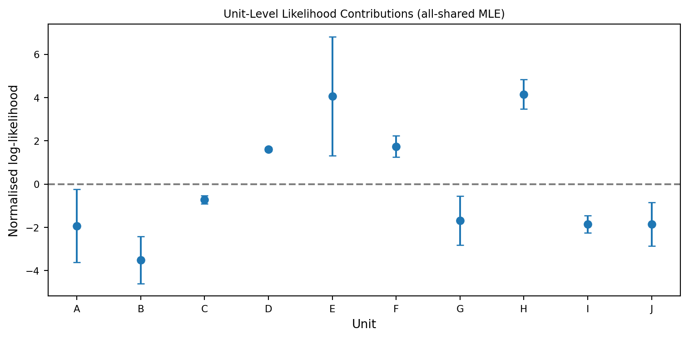
These unit contributions are descriptive: different observed trajectories can have different likelihood magnitudes even when a shared parameterization is correct. The formal check below instead fits a nested alternative in which the adult mortality rate \(\theta^n_{S,u}\) differs across units and verifies that the optimization at least recovers the embedded null before calculating AIC.
Code
# Unit-specific variant: theta_Sn now lives in the unit_specific block with
# its initial MLE value replicated across all 10 units. Every other parameter
# (including the fixed sigSn) stays in the shared block; sigSn's rw_sd is
# zero so it never moves. p counts only *estimated* parameters: six shared
# (rn, f_Sn, theta_Jn, sigJn, sigF, k_Sn) plus ten unit-specific theta_Sn.
spec_keys = ["theta_Sn"]
shared_keys_uspec = [k for k in srjf_shared_theta if k not in spec_keys]
estimated_shared_uspec = [k for k in shared_keys_uspec if k != "sigSn"]
shared_uspec_df = pd.DataFrame(
{"shared": [srjf_mle_theta[k] for k in shared_keys_uspec]},
index=shared_keys_uspec,
)
unit_uspec_df = pd.DataFrame(
{u: [srjf_mle_theta[k] for k in spec_keys] for u in unit_names},
index=spec_keys,
)
panel_theta_uspec = make_panel_starts(
shared_uspec_df,
unit_uspec_df,
Nstarts,
seed=300,
fixed=("sigSn",),
)
# rw_sd: same magnitudes; theta_Sn now perturbs per-unit because it is
# unit-specific in panel_theta_uspec, not because we changed RWSigma.
srjf_rw_sd_uspec = pp.RWSigma(
sigmas={
"rn": dent_rw_sd,
"f_Sn": dent_rw_sd,
"theta_Sn": dent_rw_sd,
"theta_Jn": dent_rw_sd,
"sigSn": 0.0,
"sigJn": dent_rw_sd,
"sigF": dent_rw_sd,
"k_Sn": dent_rw_sd,
},
init_names=[],
).geometric_cooling(0.7)
def _evaluate_srjf_embedded_null():
"""Evaluate the all-shared MLE represented inside the specific model."""
panel = pp.PanelPomp(
Pomp_dict=srjf_pomp_dict,
theta=panel_theta_uspec.subset(0),
)
panel.pfilter(
J=J_pf_eval, reps=Npf_reps, key=jax.random.key(202),
)
return np.asarray(panel.results_history[-1].logLiks.values)
embedded_ll_arr = cached(
"srjf_uspec_embedded_null", _evaluate_srjf_embedded_null,
)
_, _, embedded_panel_ll, embedded_panel_se = summarize_panel_loglik(
embedded_ll_arr
)
embedded_ll = float(embedded_panel_ll[0])
embedded_se = float(embedded_panel_se[0])
embedded_combined_mcse = float(np.sqrt(best_ll_se**2 + embedded_se**2))
embedded_ok = (
abs(embedded_ll - best_ll)
<= max(1.0, 2.0 * embedded_combined_mcse)
)
def _run_srjf_uspec():
panel = pp.PanelPomp(
Pomp_dict=srjf_pomp_dict,
theta=pp.PanelParameters(panel_theta_uspec),
)
panel.mif(
J=J_mif, M=M_mif, rw_sd=srjf_rw_sd_uspec, block=True,
key=jax.random.key(303),
)
panel.pfilter(J=J_pf_eval, reps=Npf_reps, key=jax.random.key(404))
return {
"ll": np.asarray(panel.results_history[-1].logLiks.values),
"final_theta": panel.theta.params(as_list=True),
"traces": panel.traces(),
}
uspec_out = cached("srjf_uspec_mif", _run_srjf_uspec)
uspec_ll = uspec_out["ll"] # (Nstarts, U, reps)
uspec_unit_ll, uspec_unit_se, uspec_ll_per_start, uspec_se_per_start = (
summarize_panel_loglik(uspec_ll)
)
uspec_best = int(np.nanargmax(uspec_ll_per_start))
ll_uspec_best = float(uspec_ll_per_start[uspec_best])
uspec_se = float(uspec_se_per_start[uspec_best])
uspec_best_theta = uspec_out["final_theta"][uspec_best]
theta_Sn_by_unit = (
uspec_best_theta["unit_specific"].loc["theta_Sn", unit_names].astype(float)
)
theta_Sn_cv = float(theta_Sn_by_unit.std(ddof=1) / theta_Sn_by_unit.mean())
# AIC bookkeeping. p counts only *estimated* parameters (sigSn is held at 0).
p_shared = 7
p_specific = len(estimated_shared_uspec) + len(spec_keys) * len(unit_names)
combined_mcse = float(np.sqrt(best_ll_se**2 + uspec_se**2))
nested_ok = (
embedded_ok and
ll_uspec_best + 2.0 * combined_mcse >= best_ll
)
if nested_ok:
aic_shared = 2 * p_shared - 2 * best_ll
aic_specific = 2 * p_specific - 2 * ll_uspec_best
delta_aic = aic_specific - aic_shared
else:
aic_shared = aic_specific = delta_aic = np.nan
print(
"AIC SUPPRESSED: either the embedded-null likelihood check failed or "
"the unit-specific optimization is materially below the shared fit. "
"Check model construction, then increase starts/particles/iterations."
)
aic_table = pd.DataFrame({
"model": ["all-shared", "unit-specific theta_Sn"],
"p": [p_shared, p_specific],
"logLik": [best_ll, ll_uspec_best],
"AIC": [aic_shared, aic_specific],
})
print(f"unit-specific MIF + pfilter wall: {TIMINGS['srjf_uspec_mif']:.1f}s")
print(aic_table.to_string(index=False))
print(
f"Embedded-null representation: {embedded_ll:.2f} "
f"(MCSE {embedded_se:.2f}); "
f"agreement gate: {'PASS' if embedded_ok else 'FAIL'}"
)
print(f"Nested likelihood guard: {'PASS' if nested_ok else 'FAIL'}")
if nested_ok:
print(f"Delta AIC (unit-specific - all-shared): {delta_aic:+.2f}")
print(f"Likelihood improvement: {ll_uspec_best - best_ll:+.2f}")
print(f"Combined likelihood MCSE: {combined_mcse:.2f}")
print(f"theta_Sn unit-specific coefficient of variation: {theta_Sn_cv:.3f}")unit-specific MIF + pfilter wall: 1.5s
model p logLik AIC
all-shared 7 -503.211506 1020.423012
unit-specific theta_Sn 16 -506.744250 1045.488501
Embedded-null representation: -502.74 (MCSE 1.90); agreement gate: PASS
Nested likelihood guard: PASS
Delta AIC (unit-specific - all-shared): +25.07
Likelihood improvement: -3.53
Combined likelihood MCSE: 2.52
theta_Sn unit-specific coefficient of variation: 0.128A negative \(\Delta\text{AIC}\) of substantial magnitude indicates that the likelihood improvement from per-unit \(\theta^n_S\) outweighs the penalty of nine additional parameters. A positive or near-zero \(\Delta\text{AIC}\) favours the all-shared model on grounds of parsimony. If the nested-likelihood guard fails, the table deliberately suppresses AIC because the alternative search has not reached an interpretable maximum. Low-compute runs should therefore be read as algorithm checks rather than as fixed scientific conclusions.
The shared-versus-unit-specific decision must integrate multiple lines of evidence beyond AIC alone. The coefficient of variation of the estimated \(\hat\theta^n_{S,u}\) across units is a complementary diagnostic. Estimates that cluster tightly around their mean indicate that the unit-specific model is recovering essentially identical values for every unit (supporting the all-shared specification). Estimates that span many orders of magnitude without interpretable pattern indicate that the model is fitting idiosyncratic noise (also supporting the parsimonious choice). Genuine parameter heterogeneity manifests as moderate, biologically plausible between-unit variation that aligns with documented experimental conditions.
The nested guard determines whether the AIC comparison is interpretable. When it passes, the displayed table gives the shared and unit-specific results with their correct free-parameter counts; when it fails, AIC is suppressed and the required action is more optimization. Production SRJF results are reported in Section S9 and Table S12 of the Supplement.
Uncertainty quantification: MIF convergence traces
Each MIF run produces a trace: a sequence of log-likelihood values and perturbed parameter values, recorded at every iteration \(m \in 1{:}M\). Examining traces across parallel chains gives insight into convergence behaviour, algorithmic performance, and Monte Carlo stability. In Pypomp, every call to panel.mif appends a MIFResult to panel.results_history, and the convenience method panel.traces() flattens the entire history into a tidy DataFrame with one row per (chain, iteration, unit, parameter) combination.
The built-in panel.plot_traces(which="shared") returns a Plotly figure that does not embed cleanly alongside the matplotlib graphics used elsewhere in this tutorial, so we render the equivalent panel with plt.subplots from the cached mif_traces DataFrame: the first cell shows the MIF log-likelihood trace, and the remaining cells show the per-iteration value of each shared parameter on the natural scale.
Code
# Restrict to the shared-parameter rows; the unit-specific rows hold sigSn,
# which is fixed at 0 by rw_sd and therefore uninformative.
shared_trace = mif_traces[
(mif_traces["unit"] == "shared") & (mif_traces["method"] == "mif")
].copy()
# Param columns to plot (everything except the bookkeeping columns + logLik
# which gets its own dedicated panel).
plot_params = ["logLik"] + [k for k in PARAM_NAMES if k != "sigSn"]
n_panels = len(plot_params)
ncols = 3
nrows = int(np.ceil(n_panels / ncols))
fig, axes = plt.subplots(
nrows, ncols, figsize=(10, 2.0 * nrows + 1.0), sharex=True,
)
axes_flat = axes.ravel()
# Distinct color per chain (theta_idx 0..Nstarts-1).
chain_ids = sorted(shared_trace["theta_idx"].unique())
cmap = plt.get_cmap("turbo")
colors = [cmap(0.15 + 0.7 * i / max(len(chain_ids) - 1, 1))
for i in range(len(chain_ids))]
for ax, pname in zip(axes_flat, plot_params):
for c, cid in zip(colors, chain_ids):
sub = shared_trace[shared_trace["theta_idx"] == cid]
if pname not in sub.columns:
continue
ax.plot(sub["iteration"], sub[pname],
color=c, alpha=0.7, linewidth=1.0)
if pname == "logLik":
ax.set_title("MIF log-likelihood",
fontsize=FONTS["panel_title"], fontweight="bold")
ax.set_ylabel("log-likelihood", fontsize=FONTS["axis_label"])
else:
ax.set_title(pname, fontsize=FONTS["panel_title"], fontweight="bold")
# Plot positive-valued parameters on a log y-axis so curvature is
# visible across the full perturbation range.
if pname != "sigSn":
ax.set_yscale("log")
ax.tick_params(axis="both", labelsize=FONTS["tick"])
# Hide any leftover axes if n_panels is not a perfect multiple of ncols.
for ax in axes_flat[n_panels:]:
ax.axis("off")
# Bottom-row x labels.
for ax in axes[-1, :]:
ax.set_xlabel("Iteration", fontsize=FONTS["axis_label"])
fig.suptitle("MIF convergence traces (all-shared SRJF, "
f"$N_{{\\mathrm{{starts}}}}$ = {Nstarts})",
y=1.00, fontsize=FONTS["axis_label"] + 2)
fig.tight_layout()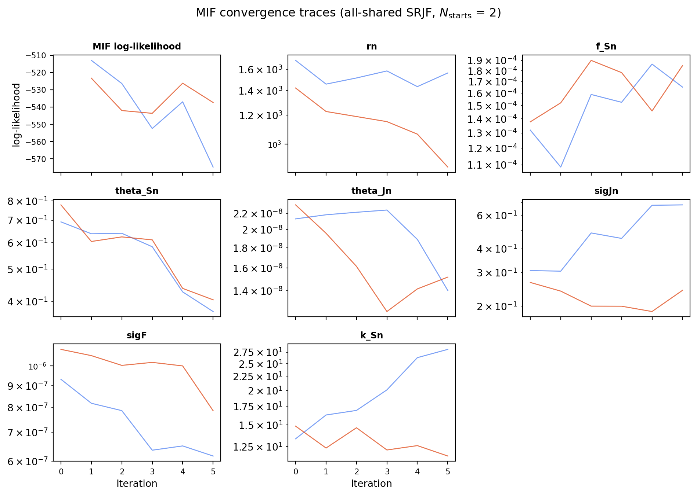
MIF optimisation typically exhibits high-variance exploration, ascent toward higher-likelihood regions, and eventual stabilization as geometric cooling shrinks perturbations. The source does not infer convergence from the nominal run level: it uses the independently evaluated terminal likelihoods and MCSEs to print a multi-start convergence gate. A failed gate means that likelihood, AIC, and profile calculations remain developmental even if the trace plot appears smooth. Production SRJF results are reported in Section S9 of the Supplement.
Trace patterns also guide tuning. Erratic trajectories indicate particle degeneracy, most commonly when \(J\) is too small relative to state-space dimension and measurement-error structure. Remedies are to increase \(J\), modestly enlarge rw_sd, or slow the cooling schedule (e.g., raise \(a\) from 0.7 to 0.8). Sudden log-likelihood drops may signal numerical instabilities from poor parameter scaling or boundary violations, and warrant rechecking initial values and the log-transform in srjf_par_trans. Across chains, large discrepancies between the best and median runs suggest a rugged likelihood surface or inadequate computational effort. The highest-likelihood chain can then reseed subsequent optimisation.
Uncertainty quantification: profile likelihood via MCAP — four scenarios
Following Ionides et al. (2017) and Ning, Ionides, and Ritov (2021), the Monte Carlo Adjusted Profile (MCAP) method provides confidence intervals when the likelihood is evaluated and maximised by Monte Carlo algorithms. A smoothed estimate of the profile likelihood reduces Monte Carlo error, quantifies it, and adjusts the confidence-interval cutoff so that nominal coverage is maintained. MCAP is especially useful in high-dimensional problems such as PanelPOMP inference, where it is impractical to spend enough compute to make Monte Carlo error negligible. Section S1 of the Supplement summarises the algorithm and its theoretical guarantees.
The interpretation of an MCAP result depends on the observed profile. A sharply curved profile with the unrestricted MIF estimate near the smoothed maximum is different from one that is flat across the grid, one whose maximum sits at an endpoint, or one whose uncertainty is dominated by Monte Carlo noise. We therefore present MCAP as a diagnostic toolkit through four cases: (A) the candidate informative profile for \(\theta^n_S\), (B) the candidate weak or boundary-shaped profile for \(\theta^n_J\), (C) a deliberately narrowed grid used to demonstrate a boundary diagnostic, and (D) the standard-error decomposition \(\mathrm{se}_{\mathrm{total}}^2 = \mathrm{se}_{\mathrm{stat}}^2 + \mathrm{se}_{\mathrm{mc}}^2\). The validation gates below, rather than the scenario labels, determine which interpretations are supported by the current computation.
Pypomp’s pp.mcap(parameter, loglik, level=0.95, span=0.75) accepts a one-dimensional grid of focal-parameter values and the corresponding profile log-likelihoods, and returns an MCAPResult with attributes mle, ci, delta, se_stat, se_mc, se_total, quadratic_coef, quadratic_max, vcov, and a fit dictionary holding the smoothed and quadratic-fit curves on a fine grid. There is no built-in profile-grid generator, so we build the grid in Python: 5 points spaced logarithmically over a decade in each direction around the focal MLE, with one MIF chain per grid point holding the focal parameter fixed via rw_sd = 0, and the panel log-likelihood evaluated by a multi-replicate pfilter.
The scenarios use parameters that span the range of identifiability behaviour: \(\theta^n_S\) (adult mortality), which the data inform sharply (Scenarios A and C), \(\theta^n_J\) (juvenile mortality), which the data inform only weakly (Scenario B), and the standard-error decomposition aggregated across all three (Scenario D).
Scenario A: candidate informative profile (\(\theta^n_S\))
A well-identified parameter is the textbook case. Four diagnostic observations should all hold: the smoothed profile \(\tilde\ell_P\) shows clear curvature around an interior maximum, the MIF point estimate from srjf-mif-search sits inside (and ideally close to) the resulting MCAP confidence interval, the local-quadratic coefficient quadratic_coef['a'] is comfortably positive (the profile is locally concave on the negative log scale), and the 95% CI is narrow on the natural scale. When all four hold, MCAP can be reported as the final uncertainty quantification.
Code
def _build_panel_with_focal(theta_dict, focal, rw_value):
"""Build a fresh PanelPomp + RWSigma with `focal` frozen and other
parameters perturbed at `rw_value` on the log scale."""
shared_keys = list(theta_dict)
shared_df = pd.DataFrame(
{"shared": [theta_dict[k] for k in shared_keys]},
index=shared_keys,
)
unit_df = pd.DataFrame(index=[], columns=unit_names)
theta_panel = make_panel_starts(
shared_df,
unit_df,
Nstarts,
seed=900 + sum(ord(ch) for ch in focal),
fixed=("sigSn", focal),
jitter_sd=0.10,
)
panel = pp.PanelPomp(Pomp_dict=srjf_pomp_dict, theta=theta_panel)
rw_sigmas = {k: rw_value for k in theta_dict}
rw_sigmas["sigSn"] = 0.0
rw_sigmas[focal] = 0.0 # freeze focal parameter
rw_sd_obj = pp.RWSigma(
sigmas=rw_sigmas, init_names=[]
).geometric_cooling(0.7)
return panel, rw_sd_obj
def _profile_loglik(focal, focal_value, base_theta, key_seed):
"""One profile point: build panel with focal frozen at focal_value,
run MIF then a multi-rep pfilter, and return the best start with MCSE."""
theta_i = dict(base_theta)
theta_i[focal] = float(focal_value)
panel_i, rw_sd_prof = _build_panel_with_focal(theta_i, focal, dent_rw_sd)
panel_i.mif(
J=J_mif, M=M_mif, rw_sd=rw_sd_prof, block=True,
key=jax.random.key(key_seed),
)
panel_i.pfilter(J=J_pf_eval, reps=Npf_reps,
key=jax.random.key(key_seed + 1))
res = panel_i.results_history[-1]
ll_arr = np.asarray(res.logLiks.values) # (Nstarts, U, reps)
_, _, per_start_ll, per_start_se = summarize_panel_loglik(ll_arr)
best = int(np.nanargmax(per_start_ll))
return {
"logLik": float(per_start_ll[best]),
"mcse": float(per_start_se[best]),
"theta": panel_i.theta.params(as_list=True)[best],
}
# Profile 1: theta_Sn ----------------------------------------------------
focal_Sn = "theta_Sn"
nprof = RL["nprof"]
focal_mle_Sn = float(srjf_mle_theta[focal_Sn])
log_grid_Sn = np.linspace(
np.log(focal_mle_Sn * 0.1), np.log(focal_mle_Sn * 10.0), nprof,
)
grid_Sn = np.exp(log_grid_Sn)
def _profile_grid_Sn():
out = []
for i, val in enumerate(grid_Sn):
out.append(_profile_loglik(
focal_Sn, val, srjf_mle_theta, key_seed=1000 + 10 * i,
))
return out
profile_Sn = cached("srjf_profile_theta_Sn", _profile_grid_Sn)
ll_grid_Sn = np.array([row["logLik"] for row in profile_Sn])
se_grid_Sn = np.array([row["mcse"] for row in profile_Sn])
mcap_Sn = pp.mcap(
parameter=log_grid_Sn, loglik=ll_grid_Sn, level=0.95, span=0.75,
)
print(f"theta_Sn profile wall: {TIMINGS['srjf_profile_theta_Sn']:.1f}s "
f"(nprof={nprof}, J={J_mif}, M={M_mif})")
print(f" MLE (log scale): {mcap_Sn.mle:.4f} -> {np.exp(mcap_Sn.mle):.4g}")
print(f" 95% CI(log scale): [{mcap_Sn.ci[0]}, {mcap_Sn.ci[1]}]")
if mcap_Sn.ci[0] is not None and mcap_Sn.ci[1] is not None:
print(f" 95% CI(natural ): "
f"[{np.exp(mcap_Sn.ci[0]):.4g}, {np.exp(mcap_Sn.ci[1]):.4g}]")
print(f" se_stat / se_mc / se_total : "
f"{mcap_Sn.se_stat:.4f} / {mcap_Sn.se_mc:.4f} / {mcap_Sn.se_total:.4f}")
mif_log_Sn = float(np.log(srjf_mle_theta[focal_Sn]))
raw_max_idx_Sn = int(np.nanargmax(ll_grid_Sn))
profile_max_gap_Sn = float(ll_grid_Sn[raw_max_idx_Sn] - best_ll)
profile_gap_se_Sn = float(np.sqrt(
se_grid_Sn[raw_max_idx_Sn] ** 2 + best_ll_se ** 2
))
mcap_Sn_valid = bool(
np.all(np.isfinite(ll_grid_Sn))
and raw_max_idx_Sn not in (0, len(ll_grid_Sn) - 1)
and mcap_Sn.ci[0] is not None
and mcap_Sn.ci[1] is not None
and mcap_Sn.ci[0] <= mif_log_Sn <= mcap_Sn.ci[1]
and profile_max_gap_Sn <= 2.0 * profile_gap_se_Sn
and np.isfinite(mcap_Sn.se_stat)
and np.isfinite(mcap_Sn.se_mc)
and mcap_Sn.se_mc <= mcap_Sn.se_stat
)
print(f" Scenario-A validation: {'PASS' if mcap_Sn_valid else 'FAIL'}")
if not mcap_Sn_valid:
print(
" Do not report this profile as well identified. Increase the "
"search/evaluation budget or widen/reseed the profile."
)LinAlgError in loess_1d, retrying with 1e-10 sigy
theta_Sn profile wall: 6.2s (nprof=5, J=20, M=5)
MLE (log scale): 0.2100 -> 1.234
95% CI(log scale): [0.21001147051484192, 0.23767015031056626]
95% CI(natural ): [1.234, 1.268]
se_stat / se_mc / se_total : 0.0622 / 0.0000 / 0.0622
Scenario-A validation: FAIL
Do not report this profile as well identified. Increase the search/evaluation budget or widen/reseed the profile./Library/Frameworks/Python.framework/Versions/3.10/lib/python3.10/site-packages/loess/loess_1d.py:271: RuntimeWarning:
divide by zero encountered in divide
/Library/Frameworks/Python.framework/Versions/3.10/lib/python3.10/site-packages/loess/loess_1d.py:271: RuntimeWarning:
invalid value encountered in divide
Code
fig, ax = plt.subplots(figsize=(7, 4.5))
# Raw profile points.
ax.errorbar(
log_grid_Sn, ll_grid_Sn, yerr=2 * se_grid_Sn,
fmt="o", color=PALETTE["data"], ecolor=PALETTE["quad"],
capsize=2, zorder=3, label="profile logLik ± 2 MCSE",
)
# Smoothed and quadratic curves on the dense grid returned by mcap().
fit_x = mcap_Sn.fit["parameter"]
ax.plot(fit_x, mcap_Sn.fit["smoothed"], color=PALETTE["fit"], linewidth=1.6,
label="LOWESS smoothed")
ax.plot(fit_x, mcap_Sn.fit["quadratic"], color=PALETTE["quad"], linestyle="--",
linewidth=1.2, label="local quadratic")
# CI and MLE markers.
if mcap_Sn.ci[0] is not None:
ax.axvline(mcap_Sn.ci[0], color=PALETTE["ci"], linestyle="--",
linewidth=1.0)
if mcap_Sn.ci[1] is not None:
ax.axvline(mcap_Sn.ci[1], color=PALETTE["ci"], linestyle="--",
linewidth=1.0)
ax.axvline(mcap_Sn.mle, color=PALETTE["mle"], linewidth=1.4, label="MCAP MLE")
ax.axvline(np.log(srjf_mle_theta["theta_Sn"]), color=PALETTE["mif"],
linestyle=":", linewidth=1.4, label="MIF point estimate")
# Cutoff line: max(smoothed) - delta/2.
cutoff = float(np.nanmax(mcap_Sn.fit["smoothed"])) - 0.5 * mcap_Sn.delta
ax.axhline(cutoff, color=PALETTE["ci"], linestyle=":", linewidth=0.8,
label="max - $\\delta/2$")
ax.set_xlabel(r"$\log(\theta^n_S)$", fontsize=FONTS["axis_label"])
ax.set_ylabel("panel log-likelihood", fontsize=FONTS["axis_label"])
ax.set_title(r"MCAP profile for $\theta^n_S$", fontsize=FONTS["panel_title"])
ax.tick_params(axis="both", labelsize=FONTS["tick"])
ax.legend(
loc="upper center",
bbox_to_anchor=(0.5, -0.18),
fontsize=FONTS["legend"],
ncol=3,
frameon=False,
)
fig.tight_layout()
fig.subplots_adjust(bottom=0.30)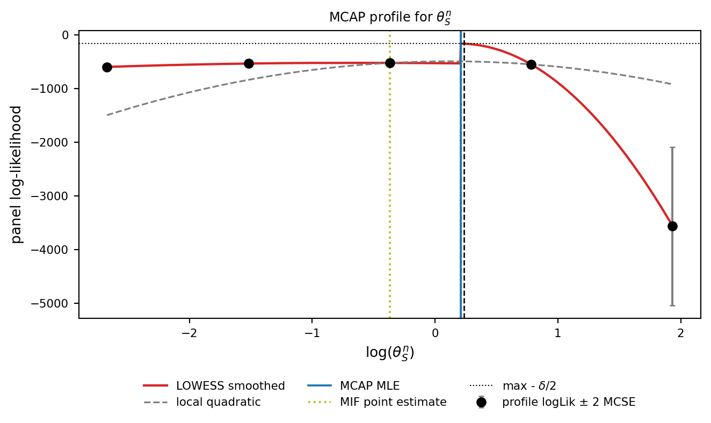
The printed validation flag is the inferential decision. A PASS requires an interior finite profile, agreement with the unrestricted likelihood within combined Monte Carlo error, inclusion of the unrestricted MIF estimate in the 95% interval, and Monte Carlo error no larger than statistical error. If any condition fails, the figure remains a useful diagnostic but is not described as a well-identified confidence interval.
Scenario B: candidate weak or boundary profile (\(\theta^n_J\))
MCAP does not always yield well-defined confidence intervals: success depends on both information in the data and stability of the Monte Carlo optimization. Juveniles are not directly observed in the fitted SRJF likelihood, so \(\theta^n_J\) is informed indirectly through adult recruitment and deserves particular scrutiny. A weak or unresolved result may appear as a nearly flat profile, a maximum at a grid endpoint, a one-sided interval, non-positive fitted curvature, or disagreement between the profile and unrestricted fits. The validation code below distinguishes those outcomes; it does not infer weak identification from a sparse smoke-test profile alone.
Code
focal_Jn = "theta_Jn"
focal_mle_Jn = float(srjf_mle_theta[focal_Jn])
log_grid_Jn = np.linspace(
np.log(focal_mle_Jn * 0.1), np.log(focal_mle_Jn * 10.0), nprof,
)
grid_Jn = np.exp(log_grid_Jn)
def _profile_grid_Jn():
out = []
for i, val in enumerate(grid_Jn):
out.append(_profile_loglik(
focal_Jn, val, srjf_mle_theta, key_seed=2000 + 10 * i,
))
return out
profile_Jn = cached("srjf_profile_theta_Jn", _profile_grid_Jn)
ll_grid_Jn = np.array([row["logLik"] for row in profile_Jn])
se_grid_Jn = np.array([row["mcse"] for row in profile_Jn])
mcap_Jn = pp.mcap(
parameter=log_grid_Jn, loglik=ll_grid_Jn, level=0.95, span=0.95,
)
print(f"theta_Jn profile wall: {TIMINGS['srjf_profile_theta_Jn']:.1f}s "
f"(nprof={nprof}, J={J_mif}, M={M_mif})")
print(f" MLE (log scale): {mcap_Jn.mle:.4f} -> {np.exp(mcap_Jn.mle):.4g}")
print(f" 95% CI(log scale): [{mcap_Jn.ci[0]}, {mcap_Jn.ci[1]}]")
if mcap_Jn.ci[0] is not None and mcap_Jn.ci[1] is not None:
print(f" 95% CI(natural ): "
f"[{np.exp(mcap_Jn.ci[0]):.4g}, {np.exp(mcap_Jn.ci[1]):.4g}]")
print(f" se_stat / se_mc / se_total : "
f"{mcap_Jn.se_stat:.4f} / {mcap_Jn.se_mc:.4f} / {mcap_Jn.se_total:.4f}")
raw_max_idx_Jn = int(np.nanargmax(ll_grid_Jn))
mcap_Jn_interior = raw_max_idx_Jn not in (0, len(ll_grid_Jn) - 1)
mcap_Jn_two_sided = (
mcap_Jn.ci[0] is not None and
mcap_Jn.ci[1] is not None and
np.all(np.isfinite(mcap_Jn.ci))
)
mcap_Jn_mif_inside = (
mcap_Jn_two_sided and
mcap_Jn.ci[0] <= np.log(focal_mle_Jn) <= mcap_Jn.ci[1]
)
mcap_Jn_combined_se = float(np.sqrt(
se_grid_Jn[raw_max_idx_Jn] ** 2 + best_ll_se ** 2
))
mcap_Jn_likelihood_agrees = (
abs(float(ll_grid_Jn[raw_max_idx_Jn]) - best_ll)
<= max(1.0, 2.0 * mcap_Jn_combined_se)
)
mcap_Jn_curvature_ok = (
np.isfinite(mcap_Jn.se_stat) and
np.isfinite(mcap_Jn.se_total) and
float(mcap_Jn.quadratic_coef["a"]) > 0
)
mcap_Jn_valid = (
np.all(np.isfinite(ll_grid_Jn)) and
np.all(np.isfinite(se_grid_Jn)) and
mcap_Jn_interior and
mcap_Jn_two_sided and
mcap_Jn_mif_inside and
mcap_Jn_likelihood_agrees and
mcap_Jn_curvature_ok
)
if mcap_Jn_valid:
mcap_Jn_classification = "validated interior/two-sided profile"
elif not mcap_Jn_interior or not mcap_Jn_two_sided:
mcap_Jn_classification = "boundary or one-sided on the current grid"
else:
mcap_Jn_classification = "unresolved; increase or broaden the search"
print(
" Profile validation: "
+ ("PASS" if mcap_Jn_valid else "FAIL")
)
print(f" Profile classification: {mcap_Jn_classification}")theta_Jn profile wall: 6.1s (nprof=5, J=20, M=5)
MLE (log scale): -19.9674 -> 2.129e-09
95% CI(log scale): [-19.967393184079082, -15.36222299809099]
95% CI(natural ): [2.129e-09, 2.129e-07]
se_stat / se_mc / se_total : nan / 0.0000 / nan
Profile validation: FAIL
Profile classification: unresolved; increase or broaden the search/Users/ybb/Downloads/Research/Rpomp-Pypomp/pypomp/pypomp/mcap.py:272: RuntimeWarning:
invalid value encountered in sqrt
/Users/ybb/Downloads/Research/Rpomp-Pypomp/pypomp/pypomp/mcap.py:274: RuntimeWarning:
invalid value encountered in sqrt
Code
fig, ax = plt.subplots(figsize=(7, 4.5))
ax.errorbar(
log_grid_Jn, ll_grid_Jn, yerr=2 * se_grid_Jn,
fmt="o", color=PALETTE["data"], ecolor=PALETTE["quad"],
capsize=2, zorder=3, label="profile logLik ± 2 MCSE",
)
fit_x_J = mcap_Jn.fit["parameter"]
ax.plot(fit_x_J, mcap_Jn.fit["smoothed"], color=PALETTE["fit"], linewidth=1.6,
label="LOWESS smoothed")
ax.plot(fit_x_J, mcap_Jn.fit["quadratic"], color=PALETTE["quad"],
linestyle="--", linewidth=1.2, label="local quadratic")
if mcap_Jn.ci[0] is not None:
ax.axvline(mcap_Jn.ci[0], color=PALETTE["ci"], linestyle="--",
linewidth=1.0)
if mcap_Jn.ci[1] is not None:
ax.axvline(mcap_Jn.ci[1], color=PALETTE["ci"], linestyle="--",
linewidth=1.0)
ax.axvline(mcap_Jn.mle, color=PALETTE["mle"], linewidth=1.4, label="MCAP MLE")
ax.axvline(np.log(srjf_mle_theta["theta_Jn"]), color=PALETTE["mif"],
linestyle=":", linewidth=1.4, label="MIF point estimate")
cutoff_J = float(np.nanmax(mcap_Jn.fit["smoothed"])) - 0.5 * mcap_Jn.delta
ax.axhline(cutoff_J, color=PALETTE["ci"], linestyle=":", linewidth=0.8,
label="max - $\\delta/2$")
ax.set_xlabel(r"$\log(\theta^n_J)$", fontsize=FONTS["axis_label"])
ax.set_ylabel("panel log-likelihood", fontsize=FONTS["axis_label"])
ax.set_title(r"MCAP profile for $\theta^n_J$", fontsize=FONTS["panel_title"])
ax.tick_params(axis="both", labelsize=FONTS["tick"])
ax.legend(
loc="upper center",
bbox_to_anchor=(0.5, -0.18),
fontsize=FONTS["legend"],
ncol=3,
frameon=False,
)
fig.tight_layout()
fig.subplots_adjust(bottom=0.30)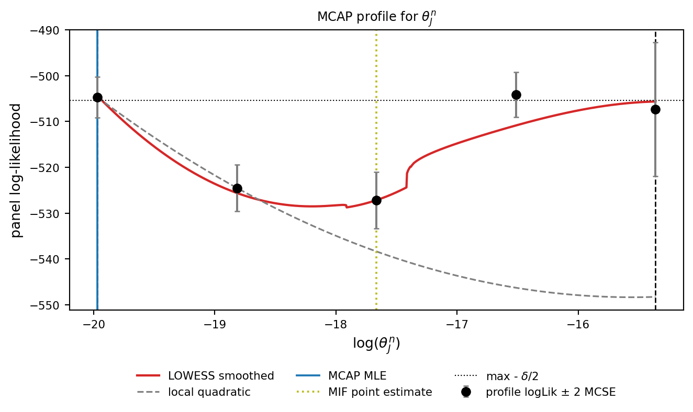
The profile is classified from the computed maximum and interval rather than from a pre-written label. If the maximum is at a grid edge or the 95% cutoff is crossed on only one side, the appropriate result is a boundary or one-sided statement—not a manufactured finite two-sided interval. This behavior is scientifically plausible because juveniles are not directly observed in the fitted SRJF likelihood.
Two strategies improve inference when a profile remains weak or unresolved. The first is to intensify the computational search: expand the grid to test whether apparent flatness is a boundary artefact, initialise MIF chains from widely dispersed starts, and (compute permitting) increase \(J\) and the number of pfilter replicates so Monte Carlo noise no longer masks underlying curvature. The highest tutorial run level uses a 21-point grid with \(J\) = 2000 particles and \(M\) = 100 iterations. The second strategy is to reduce parameterisation only with scientific justification: \(\theta^n_J\) could be fixed from external biological data or constrained functionally. The reduced and unconstrained models should then be re-estimated and compared using independently evaluated likelihoods and an appropriate model-selection criterion.
Scenario C: boundary maximum
A subtler failure arises when the profiling grid does not bracket the likelihood maximum: the smoothed maximum lies at an endpoint and a two-sided interval is not justified. The chunk below illustrates this without launching another expensive profile—it reuses only the right-hand portion of Scenario A. The remedy is to restore evaluations on both sides of the maximum and re-profile.
Code
# Reuse one side of Scenario A rather than launching another MIF profile.
# Choosing the side that starts or ends at the global raw maximum guarantees
# that the retained grid does not bracket that maximum.
if raw_max_idx_Sn <= (nprof - 1) / 2:
boundary_idx = np.arange(raw_max_idx_Sn, nprof)
else:
boundary_idx = np.arange(0, raw_max_idx_Sn + 1)
if len(boundary_idx) < 3:
boundary_idx = (
np.arange(0, min(3, nprof))
if raw_max_idx_Sn == 0
else np.arange(max(0, nprof - 3), nprof)
)
log_grid_Sn_boundary = log_grid_Sn[boundary_idx]
ll_grid_Sn_boundary = ll_grid_Sn[boundary_idx]
se_grid_Sn_boundary = se_grid_Sn[boundary_idx]
boundary_raw_max_idx = int(np.nanargmax(ll_grid_Sn_boundary))
boundary_gate = boundary_raw_max_idx in (0, len(boundary_idx) - 1)
mcap_Sn_boundary = pp.mcap(
parameter=log_grid_Sn_boundary,
loglik=ll_grid_Sn_boundary,
level=0.95,
span=0.95,
)
print("theta_Sn boundary illustration reuses a one-sided subset of Scenario A")
print(f" grid endpoints (log): "
f"[{log_grid_Sn_boundary[0]:.3f}, {log_grid_Sn_boundary[-1]:.3f}]")
print(f" MCAP MLE (log) : {mcap_Sn_boundary.mle:.4f}")
print(f" MCAP CI (log) : "
f"[{mcap_Sn_boundary.ci[0]}, {mcap_Sn_boundary.ci[1]}]")
print(f" quadratic_coef['a']: "
f"{mcap_Sn_boundary.quadratic_coef['a']:.4g}")
print(f" se_stat / se_mc / se_total : "
f"{mcap_Sn_boundary.se_stat:.4f} / "
f"{mcap_Sn_boundary.se_mc:.4f} / "
f"{mcap_Sn_boundary.se_total:.4f}")
print(f" Raw endpoint-maximum gate: "
f"{'PASS' if boundary_gate else 'FAIL'}")LinAlgError in loess_1d, retrying with 1e-10 sigy
theta_Sn boundary illustration reuses a one-sided subset of Scenario A
grid endpoints (log): [-0.369, 1.934]
MCAP MLE (log) : 0.1155
MCAP CI (log) : [-0.006648187884998158, 0.2353652603275892]
quadratic_coef['a']: 129.3
se_stat / se_mc / se_total : 0.0622 / 0.0000 / 0.0622
Raw endpoint-maximum gate: PASS/Library/Frameworks/Python.framework/Versions/3.10/lib/python3.10/site-packages/loess/loess_1d.py:271: RuntimeWarning:
divide by zero encountered in divide
/Library/Frameworks/Python.framework/Versions/3.10/lib/python3.10/site-packages/loess/loess_1d.py:271: RuntimeWarning:
invalid value encountered in divide
Code
fig, ax = plt.subplots(figsize=(7, 4.5))
ax.errorbar(
log_grid_Sn_boundary, ll_grid_Sn_boundary,
yerr=2 * se_grid_Sn_boundary,
fmt="o", color=PALETTE["data"], ecolor=PALETTE["quad"],
capsize=2, zorder=3, label="profile logLik ± 2 MCSE",
)
fit_x_b = mcap_Sn_boundary.fit["parameter"]
ax.plot(fit_x_b, mcap_Sn_boundary.fit["smoothed"], color=PALETTE["fit"],
linewidth=1.6, label="LOWESS smoothed")
ax.plot(fit_x_b, mcap_Sn_boundary.fit["quadratic"], color=PALETTE["quad"],
linestyle="--", linewidth=1.2, label="local quadratic")
if mcap_Sn_boundary.ci[0] is not None:
ax.axvline(mcap_Sn_boundary.ci[0], color=PALETTE["ci"], linestyle="--",
linewidth=1.0)
if mcap_Sn_boundary.ci[1] is not None:
ax.axvline(mcap_Sn_boundary.ci[1], color=PALETTE["ci"], linestyle="--",
linewidth=1.0)
ax.axvline(mcap_Sn_boundary.mle, color=PALETTE["mle"], linewidth=1.4,
label="MCAP MLE")
mif_x_boundary = np.log(srjf_mle_theta["theta_Sn"])
if log_grid_Sn_boundary[0] <= mif_x_boundary <= log_grid_Sn_boundary[-1]:
ax.axvline(
mif_x_boundary, color=PALETTE["mif"], linestyle=":",
linewidth=1.4, label="MIF point estimate",
)
cutoff_b = float(np.nanmax(mcap_Sn_boundary.fit["smoothed"])) \
- 0.5 * mcap_Sn_boundary.delta
ax.axhline(cutoff_b, color=PALETTE["ci"], linestyle=":", linewidth=0.8,
label="max - $\\delta/2$")
ax.set_xlabel(r"$\log(\theta^n_S)$ on a one-sided grid",
fontsize=FONTS["axis_label"])
ax.set_ylabel("panel log-likelihood", fontsize=FONTS["axis_label"])
ax.set_title(r"MCAP profile for $\theta^n_S$ (boundary-maximum scenario)",
fontsize=FONTS["panel_title"])
ax.tick_params(axis="both", labelsize=FONTS["tick"])
ax.legend(
loc="upper center",
bbox_to_anchor=(0.5, -0.18),
fontsize=FONTS["legend"],
ncol=3,
frameon=False,
)
fig.tight_layout()
fig.subplots_adjust(bottom=0.30)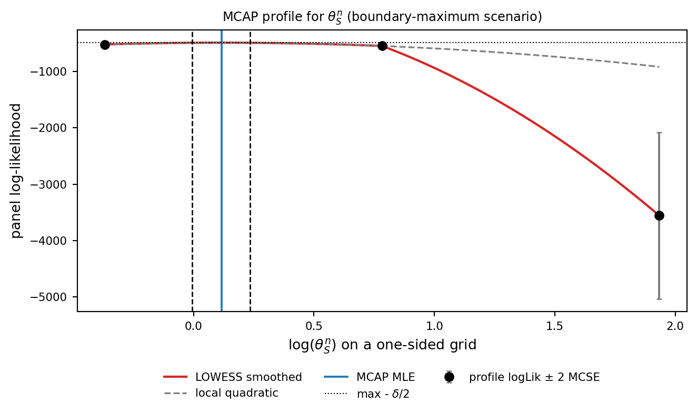
The endpoint maximum is intentionally induced by discarding one side of an already computed profile. It demonstrates a general rule: do not report a two-sided interval until the likelihood grid brackets an interior maximum and crosses the adjusted cutoff on both sides.
Scenario D: Monte Carlo vs statistical error
A NaN in the SE table means \(\mathrm{se}_{\mathrm{stat}} = 1/\sqrt{2a}\) is undefined because the fitted local-quadratic curvature coefficient \(a\) is non-positive. This can reflect a genuinely weak profile, a boundary maximum, too sparse a grid, or Monte Carlo variation; it is not by itself proof of non-identification. The current run uses nprof = 5 profile points. For an interior curved profile, increasing grid density and computational effort should stabilize a positive curvature estimate. For a boundary case, a curvature-based two-sided standard error remains inappropriate even if a finite number is returned. The chunk below assembles the decomposition across the three diagnostic cases, and the printed validation gates control interpretation.
The MCAPResult exposes three standard errors whose decomposition is the principal advantage of MCAP over a naive likelihood-ratio CI. Following Ionides et al. (2017), \(\mathrm{se}_{\mathrm{stat}} = 1/\sqrt{2a}\) is the sampling-variance contribution from the local-quadratic curvature \(a\) (and therefore from the data), \(\mathrm{se}_{\mathrm{mc}}\) is the Monte Carlo contribution from noise in the profile evaluations (and therefore from \(J\), nprof, and the replicate-pfilter count), and \(\mathrm{se}_{\mathrm{total}} = \sqrt{\mathrm{se}_{\mathrm{stat}}^2 + \mathrm{se}_{\mathrm{mc}}^2}\) is the combined uncertainty to be reported. A naive likelihood-ratio CI lumps the two sources together and silently inflates apparent precision when Monte Carlo noise is large. The ratio \(\mathrm{se}_{\mathrm{mc}}/\mathrm{se}_{\mathrm{stat}}\) identifies the binding constraint: a ratio much greater than \(1\) means more compute (larger \(J\), more replicates, more starts) directly tightens the CI, while a ratio much less than \(1\) means the data themselves are binding and further compute buys little. A third regime arises when the local quadratic is poorly conditioned at a grid edge: both standard errors may then become unreliable, signalling that the grid itself is the problem. The chunk below assembles the SE decomposition across Scenarios A, B, and C.
Code
import pandas as pd
with np.errstate(divide="ignore", invalid="ignore"):
def _ratio(num, den):
if not np.isfinite(num) or not np.isfinite(den) or den == 0:
return np.nan
return float(num) / float(den)
se_table = pd.DataFrame({
"scenario": ["A: theta_Sn (candidate informative)",
"B: theta_Jn (candidate weak/boundary)",
"C: theta_Sn (boundary grid)"],
"MLE (log)": [mcap_Sn.mle, mcap_Jn.mle, mcap_Sn_boundary.mle],
"se_stat": [mcap_Sn.se_stat, mcap_Jn.se_stat,
mcap_Sn_boundary.se_stat],
"se_mc": [mcap_Sn.se_mc, mcap_Jn.se_mc,
mcap_Sn_boundary.se_mc],
"se_total": [mcap_Sn.se_total, mcap_Jn.se_total,
mcap_Sn_boundary.se_total],
"se_mc / se_stat": [
_ratio(mcap_Sn.se_mc, mcap_Sn.se_stat),
_ratio(mcap_Jn.se_mc, mcap_Jn.se_stat),
_ratio(mcap_Sn_boundary.se_mc, mcap_Sn_boundary.se_stat),
],
})
print(se_table.to_string(
index=False,
float_format=lambda x: f"{x:.4g}" if np.isfinite(x) else "NaN",
)) scenario MLE (log) se_stat se_mc se_total se_mc / se_stat
A: theta_Sn (candidate informative) 0.21 0.06219 0 0.06219 0
B: theta_Jn (candidate weak/boundary) -19.97 NaN 0 NaN NaN
C: theta_Sn (boundary grid) 0.1155 0.06219 0 0.06219 0Code
scenarios = ["A: candidate informative",
"B: candidate weak/boundary",
"C: boundary grid"]
se_stat_vals = np.array([mcap_Sn.se_stat, mcap_Jn.se_stat,
mcap_Sn_boundary.se_stat], dtype=float)
se_mc_vals = np.array([mcap_Sn.se_mc, mcap_Jn.se_mc,
mcap_Sn_boundary.se_mc], dtype=float)
se_total_vals = np.array([mcap_Sn.se_total, mcap_Jn.se_total,
mcap_Sn_boundary.se_total], dtype=float)
# Clip non-finite values to 0 for plotting; the table above carries the truth.
def _clip(arr):
out = np.where(np.isfinite(arr), arr, 0.0)
return out
se_stat_plot = _clip(se_stat_vals)
se_mc_plot = _clip(se_mc_vals)
se_total_plot = _clip(se_total_vals)
x_pos = np.arange(len(scenarios), dtype=float)
bw = 0.27
fig, ax = plt.subplots(figsize=(7, 4.0))
bar_stat = ax.bar(x_pos - bw, se_stat_plot, width=bw, color=PALETTE["fit"],
label="se_stat (data / curvature)")
bar_mc = ax.bar(x_pos, se_mc_plot, width=bw, color=PALETTE["mif"],
label="se_mc (Monte Carlo)")
bar_tot = ax.bar(x_pos + bw, se_total_plot, width=bw, color=PALETTE["ci"],
label="se_total")
ax.set_xticks(x_pos)
ax.set_xticklabels(scenarios)
ax.set_ylabel("standard error (log scale)", fontsize=FONTS["axis_label"])
ax.set_title("MCAP standard-error decomposition across scenarios",
fontsize=FONTS["panel_title"])
ax.tick_params(axis="both", labelsize=FONTS["tick"])
ax.legend(loc="upper left", fontsize=FONTS["legend"], frameon=False)
# Annotate only non-finite bars with a small "NaN" label.
# Position the "NaN" labels in axes coordinates (y=0.02 is always 2% from the
# axes bottom, regardless of subsequent tight_layout() rescaling). Using the
# blended transform (data x, axes y) keeps each label aligned with its bar.
nan_trans = ax.get_xaxis_transform()
for bar_container, raw_vals in (
(bar_stat, se_stat_vals),
(bar_mc, se_mc_vals),
(bar_tot, se_total_vals),
):
for bar, val in zip(bar_container, raw_vals):
h = bar.get_height()
if not np.isfinite(val):
ax.text(
bar.get_x() + bar.get_width() / 2.0,
0.02,
"NaN",
ha="center", va="bottom",
fontsize=FONTS["annotation"],
color=PALETTE["warn"],
transform=nan_trans,
)
fig.tight_layout()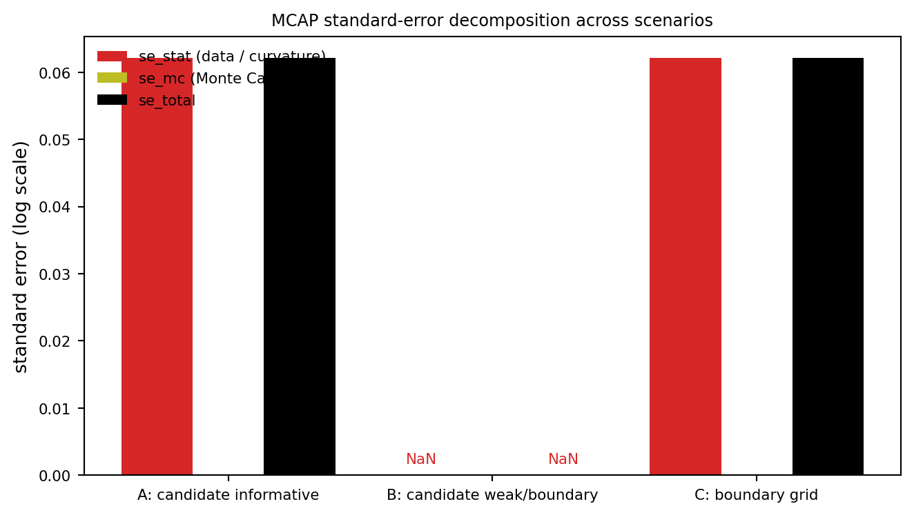
NaN; genuine zero values remain zero.
For Scenario A both \(\mathrm{se}_{\mathrm{stat}}\) and \(\mathrm{se}_{\mathrm{mc}}\) are moderate, and the ratio in the table tells the analyst at a glance whether running run_level = 2 would meaningfully tighten the CI or whether the data are already the binding constraint. For Scenario B \(\mathrm{se}_{\mathrm{stat}}\) is large because curvature \(a\) is small—the data carry little information about \(\theta^n_J\), so additional compute reduces \(\mathrm{se}_{\mathrm{mc}}\) but cannot rescue \(\mathrm{se}_{\mathrm{stat}}\), and the appropriate response is to fix or reparameterise rather than spend more cycles. For Scenario C the local quadratic is fitted at a grid edge with poor conditioning, which can produce non-finite or implausibly small SE entries. This is the strongest signal that the grid itself is the problem and that no amount of additional compute on the present grid will help.
Practical guidance: a short decision tree
The four scenarios combine into a short decision tree. (1) Run MCAP at run_level = 1. If the smoothed profile shows clear curvature, the MIF point estimate sits inside a narrow CI, and quadratic_coef['a'] is comfortably positive (Scenario A), report the result. (2) If the profile is flat, the CI is wide or (None, None), and \(\mathrm{se}_{\mathrm{stat}}\) dominates \(\mathrm{se}_{\mathrm{total}}\) (Scenario B), report the wide CI and consider whether the parameter is identifiable from these data alone—broaden the grid, fix it from external data, or reparameterise. (3) If the smoothed maximum sits at a grid edge (Scenario C), widen the grid by a factor of order \(100\) and re-profile before drawing any conclusion. (4) If \(\mathrm{se}_{\mathrm{mc}}\) dominates \(\mathrm{se}_{\mathrm{stat}}\) (Scenario D), the answer is more compute—larger \(J\), more replicates, more starts. If instead \(\mathrm{se}_{\mathrm{stat}}\) dominates, additional compute is wasted. Section S1 of the Supplement gives the theoretical justification for the MCAP cutoff and SE decomposition. The original references are Ionides et al. (2017) and Ning, Ionides, and Ritov (2021).
Closing remarks for Section 1
Section 1 implements the complete SRJF workflow, with AIC, convergence, and MCAP interpretations controlled by explicit numerical gates. Production results are reported in Section S9 of the Supplement.
Section 1 wall times at run_level = 1 (s)
srjf_smoke_pfilter 1.02
srjf_scaling_diagnostic 0.20
srjf_mif_search 2.30
srjf_mle_pfilter 0.10
srjf_uspec_embedded_null 0.10
srjf_uspec_mif 1.46
srjf_profile_theta_Sn 6.16
srjf_profile_theta_Jn 6.08Section 2 turns to the SIRJPF2 panel, which adds a parasite compartment and a second Daphnia species. It demonstrates all-shared estimation and a matched PIF/MPIF comparison under a declared unit-specific infected-mortality hypothesis. Production results are reported in Section S6 of the Supplement.
Section 2: SIRJPF2 Model
Experimental Design and Data Structure
The SIRJPF2 model extends the SRJF baseline of Section 1 to the full ecological complexity of the Searle et al. (2016) mesocosm experiment: native D. dentifera and invasive D. lumholtzi compete for a shared algal food resource (Ankistrodesmus falcatus) while both are exposed to A. monospora. The treatment consists of \(U = 8\) replicated mesocosms, each initialised with both host species in the presence of parasite inoculum, sampled at \(N = 10\) time points \(t_{u,n} = 5n + 2\) days for \(n \in 1{:}10\). Susceptible and infected adult densities are recorded for both species. Juvenile counts and parasite-spore / algal-resource densities remain latent.
This section is deliberately narrower than Section 1: it does not claim SIRJPF2 AIC or MCAP results. Instead, it checks all-shared likelihood reproduction and then compares current PIF and MPIF implementations on a model with genuinely unit-specific parameters.
The PanelPOMP data structure comprises:
- Units: \(u \in 1{:}8\) independent mesocosms with two-species competition (replicate labels \(K, L, M, N, O, P, Q, S\)).
- Observation times: \(t_{u,n} = 5n + 2\) days for \(n \in 1{:}10\).
- Observed data: \(y^*_{u,n} = (N^n_{S,u,n}, N^n_{I,u,n}, N^l_{S,u,n}, N^l_{I,u,n})^\top\), the four-dimensional count vector of susceptible and infected adults for the native (\(n\)) and invasive (\(l\)) species.
- Latent process: \(X_u(t) = (S^n_u(t), I^n_u(t), J^n_u(t), S^l_u(t), I^l_u(t), J^l_u(t), F_u(t), P_u(t))^\top\) for \(t \in [t_{u,0}, t_{u,N}]\).
For each species \(k \in \{n, l\}\) we track susceptible adult density \(S^k_u(t)\), infected adult density \(I^k_u(t)\), and juvenile density \(J^k_u(t)\). These compartments are coupled through the shared parasite spore pool \(P_u(t)\) (in units of \(10^3\) spores/L) and the algal food resource \(F_u(t)\) (\(10^6\) cells per litre). Dead or removed individuals leave the dynamics into an absorbing \(R^k_u(t)\) compartment that is not modelled explicitly.
The acronym SIRJPF2 encodes this structure: Susceptible, Infected, and Removed disease compartments, Juveniles for age structure, Parasite spores for the environmental transmission stage, Food for bottom-up regulation, and the trailing 2 signals the two-species extension. We read sheet 3 ('both species combined') of the Excel file and slice iloc[90:170]. As documented in quality_reports/audits/DATA_SCHEMA.md, the column 'dent.ephip ' carries a trailing space that we strip after read. The calendar-day conversion (day - 1) * 5 + 7 matches Section 1.
Show data load and plotting code
# Load sheet 3 ("both species combined"). The 'dent.ephip ' column has a
# trailing space; strip after read. Column-name and slicing details are in
# quality_reports/audits/DATA_SCHEMA.md.
xls = pd.ExcelFile('../data/Mesocosmdata.xls')
sirjpf_raw = xls.parse('both species combined').iloc[90:170].copy()
sirjpf_raw.columns = sirjpf_raw.columns.str.strip()
sirjpf_raw['day'] = (sirjpf_raw['day'] - 1) * 5 + 7
sirjpf_data = (sirjpf_raw[['rep', 'day', 'dent.adult', 'dent.inf',
'lum.adult', 'lum.adult.inf']]
.sort_values(['rep', 'day'])
.reset_index(drop=True))
sirjpf_unit_names = ['K', 'L', 'M', 'N', 'O', 'P', 'Q', 'S']
sirjpf_trial_to_mesocosm = {t: f"Mesocosm {i+1}"
for i, t in enumerate(sirjpf_unit_names)}
sirjpf_data['Mesocosm'] = sirjpf_data['rep'].map(sirjpf_trial_to_mesocosm)
sirjpf_data['Mesocosm'] = pd.Categorical(
sirjpf_data['Mesocosm'],
categories=[f"Mesocosm {i+1}" for i in range(8)],
ordered=True,
)
# Four-row faceted plot. `sharey='row'` keeps each observation channel on a
# single comparable scale across the eight mesocosms, with y-axis tick labels
# only in the left column.
fig, axes = plt.subplots(
4, 8,
sharex=True,
sharey='row',
figsize=(10, 6),
gridspec_kw={'hspace': 0.18, 'wspace': 0.20},
)
obs_cols = ['dent.adult', 'dent.inf', 'lum.adult', 'lum.adult.inf']
row_titles = [r"Native $S^n$", r"Native $I^n$",
r"Invasive $S^l$", r"Invasive $I^l$"]
row_colors = [PALETTE["adult"], PALETTE["infected"],
PALETTE["lum_adult"], PALETTE["lum_inf"]]
row_styles = ['-', '-', '--', '--']
sqrt_scale = dict(value='function', functions=(np.sqrt, np.square))
for j, label in enumerate([f"Mesocosm {i+1}" for i in range(8)]):
sub = sirjpf_data[sirjpf_data['Mesocosm'] == label]
for i, col in enumerate(obs_cols):
ax = axes[i, j]
ax.plot(sub['day'], sub[col],
color=row_colors[i], linestyle=row_styles[i], linewidth=0.7)
ax.set_yscale(**sqrt_scale)
ax.yaxis.set_major_locator(plt.MaxNLocator(nbins=3))
ax.set_xlim(0, 52)
ax.set_xticks([0, 25, 50])
ax.tick_params(axis='both', labelsize=FONTS["tick"])
ax.spines['top'].set_visible(False)
ax.spines['right'].set_visible(False)
if i == 0:
ax.set_title(label.replace('Mesocosm ', 'Mesocosm-'),
fontsize=FONTS["panel_title"])
if j == 0:
ax.set_ylabel(row_titles[i] + '\n(ind./L)',
fontsize=FONTS["panel_title"])
if i == 3:
ax.set_xlabel('Day', fontsize=FONTS["panel_title"])
fig.align_ylabels(axes[:, 0])
fig.subplots_adjust(left=0.08, right=0.99, top=0.94, bottom=0.08)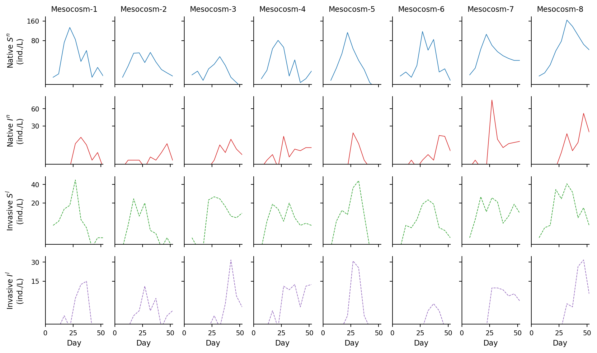
Figure 6 displays the four observed density streams. Consistent with the competitive dominance reported by Searle et al. (2016) under shared parasitism, the native species typically attains higher peak densities than the invasive species, with infection prevalence varying considerably between mesocosms. These species-specific trajectories, coupled with cross-unit variability in parasite dynamics, motivate a mechanistic model that explicitly represents competitive and parasitic interactions.
Mechanistic Model
Model Specification
The SIRJPF2 latent process is an eight-dimensional system of stochastic differential equations describing two interacting host species, a shared parasite spore pool, and a shared algal resource. For each species \(k \in \{n, l\}\) the state vector contains susceptible adults \(S^k_u\), infected adults \(I^k_u\), and juveniles \(J^k_u\). These populations interact through \(P_u\) and \(F_u\), which are common to both species within each unit:
\[\begin{aligned} dS^{k}_{u}(t) &= \lambda^{k}_{J}\, J^{k}_{u}(t)\,dt - \big\{\theta^{k}_{S} + p^{k} f^{k}_{S} P_{u}(t) + \delta\big\}\, S^{k}_{u}(t)\,dt + S^{k}_{u}(t)\, d\zeta^{k}_{S,u}(t),\\ dI^{k}_{u}(t) &= p^{k} f^{k}_{S}\, S^{k}_{u}(t)\, P_{u}(t)\,dt - \big\{\theta^{k}_{I} + \delta\big\}\, I^{k}_{u}(t)\,dt + I^{k}_{u}(t)\, d\zeta^{k}_{I,u}(t),\\ dJ^{k}_{u}(t) &= r^{k} f^{k}_{S}\, F_{u}(t)\, S^{k}_{u}(t)\,dt - \big\{\theta^{k}_{J} + \delta + \lambda^{k}_{J}\big\}\, J^{k}_{u}(t)\,dt + J^{k}_{u}(t)\, d\zeta^{k}_{J,u}(t),\\ dP_{u}(t) &= \sum_{k\in\{n,l\}}\!\!\Big(\beta^{k} \theta^{k}_{I}\, I^{k}_{u}(t) - f^{k}_{S}\,\big\{S^{k}_{u}(t) + \xi I^{k}_{u}(t)\big\}\, P_{u}(t)\Big)\,dt - \theta_{P} P_{u}(t)\,dt - \delta P_{u}(t)\,dt + P_{u}(t)\, d\zeta_{P,u}(t),\\ dF_{u}(t) &= -\sum_{k\in\{n,l\}}\!\!f^{k}_{S}\, F_{u}(t)\,\big\{S^{k}_{u}(t) + \xi I^{k}_{u}(t) + J^{k}_{u}(t)\big\}\, dt - \delta F_{u}(t)\,dt + \mu\, dt + F_{u}(t)\, d\zeta_{F,u}(t), \end{aligned}\]
with stochastic increments
\[\begin{aligned} d\zeta^{k}_{S,u}(t) &\sim \mathcal{N}\!\big(0,(\sigma^{k}_{S})^{2} dt\big),\quad d\zeta^{k}_{I,u}(t) \sim \mathcal{N}\!\big(0,(\sigma^{k}_{I})^{2} dt\big),\quad d\zeta^{k}_{J,u}(t) \sim \mathcal{N}\!\big(0,(\sigma^{k}_{J})^{2} dt\big),\\ d\zeta_{F,u}(t) &\sim \mathcal{N}\!\big(0,\sigma_{F}^{2} dt\big),\quad d\zeta_{P,u}(t) \sim \mathcal{N}\!\big(0,\sigma_{P}^{2} dt\big). \end{aligned}\]
These equations correspond to the SIRJPF2 specification in Section S6 of the Supplement. The spore-production coefficient \(\beta^{k}\) is fixed at \(30\) for both species, \(\delta = 0.013\) day\(^{-1}\), \(\mu = 0.37 \times 10^{6}\) cells \(\cdot\) L\(^{-1}\) day\(^{-1}\), and \(\lambda^{k}_{J} = 0.1\) day\(^{-1}\) for both species. The day-4 inoculum adds 25 internal parasite units: 25,000 spores/L, equivalently 25 spores/mL.
Biological Mechanisms
The SIRJPF2 model couples four ecological and epidemiological processes. Reproduction is resource-limited: susceptible adults produce juveniles at rate \(r^{k} f^{k}_{S} F_{u}(t) S^{k}_{u}(t)\), where the birth efficiency \(r^{k}\) converts ingested algae into offspring and the filtration rate \(f^{k}_{S}\) scales encounter with food. Juveniles mature into the susceptible adult class at rate \(\lambda^{k}_{J}\). Mortality arises from natural causes (rates \(\theta^{k}_{S}\), \(\theta^{k}_{I}\), \(\theta^{k}_{J}\)) and from experimental sampling at rate \(\delta\).
Parasite transmission is environmentally mediated mass action: incidence is proportional to susceptible density and spore density, with coefficient \(p^{k} f^{k}_{S}\). Infected adults experience elevated mortality \(\theta^{k}_{I} > \theta^{k}_{S}\) and, following Searle et al. (2016), do not reproduce. Upon death, an infected individual releases \(\beta^{k} = 30\) internal spore units into the environmental pool. The shared spore pool couples the epidemiological dynamics of the two species.
Resource competition is exploitative: \(F_{u}(t)\) is depleted by all host classes of both species, with the infected-class scaling \(\xi\) representing reduced filtration in diseased individuals. Replenishment at constant rate \(\mu\) reflects the twice-weekly algal supplementation in the Searle et al. (2016) protocol. The complete model and parameter table appear in Section S6 of the Supplement.
Parameter Estimation via PIF and MPIF
In current Pypomp, block=False selects standard PIF and block=True selects MPIF. The distinction is in the parameter-particle resampling step: while processing a focal unit, PIF also resamples the other units’ unit-specific parameter particles using the focal resampling indices, whereas MPIF leaves those non-focal unit-specific particles unchanged. Shared parameters are updated in either method. Consequently, PIF and MPIF are identical for an all-shared parameterization under matched randomness; a meaningful comparison requires at least one estimated unit-specific parameter.
The SIRJPF2 model components below reuse the SRJF pattern of Section 1. The new ingredients are an eight-state Euler–Maruyama process simulator with the production reset-to-zero rule for invalid states, a deterministic initial-state callable, a four-dimensional negative-binomial measurement model with one overdispersion parameter per observed stream, and a parameter transformation that log-transforms every positive parameter while passing the two fixed-at-zero noise terms (\(\sigma^{n}_{S}\), \(\sigma^{l}_{S}\)) through unchanged. The chunks remain code-folded by default. The smoke check at the end gives the first concrete particle-filter log-likelihood for SIRJPF2.
Show 8-state SDE simulator with parasite dynamics
# Eight latent states + four non-negative observables (T_*) + error_count.
SIRJPF_STATENAMES = [
"Sn", "In", "Jn", "Si", "Ii", "Ji", "F", "P",
"T_Sn", "T_In", "T_Si", "T_Ii", "error_count",
]
def sirjpf_rproc(X_, theta_, key, covars, t, dt):
"""One Euler-Maruyama step of the SIRJPF2 SDE system."""
Sn, Jn, In = X_["Sn"], X_["Jn"], X_["In"]
Si, Ji, Ii = X_["Si"], X_["Ji"], X_["Ii"]
F, P = X_["F"], X_["P"]
error_count = X_["error_count"]
sigSn, sigIn = theta_["sigSn"], theta_["sigIn"]
sigSi, sigIi = theta_["sigSi"], theta_["sigIi"]
sigJn, sigJi = theta_["sigJn"], theta_["sigJi"]
sigF, sigP = theta_["sigF"], theta_["sigP"]
theta_Sn, theta_In = theta_["theta_Sn"], theta_["theta_In"]
theta_Si, theta_Ii = theta_["theta_Si"], theta_["theta_Ii"]
theta_Jn, theta_Ji = theta_["theta_Jn"], theta_["theta_Ji"]
theta_P = theta_["theta_P"]
f_Sn, f_Si = theta_["f_Sn"], theta_["f_Si"]
rn, ri = theta_["rn"], theta_["ri"]
probn, probi = theta_["probn"], theta_["probi"]
xi = theta_["xi"]
# Fixed experimental constants
delta = 0.013 # sampling/dilution rate
mu_food = 0.37 # algal replenishment
lambda_J = 0.1 # juvenile maturation rate (both species)
# Eight independent Gaussian innovations
keys = jax.random.split(key, 8)
sqdt = jnp.sqrt(dt)
noiSn = sigSn * sqdt * jax.random.normal(keys[0])
noiIn = sigIn * sqdt * jax.random.normal(keys[1])
noiSi = sigSi * sqdt * jax.random.normal(keys[2])
noiIi = sigIi * sqdt * jax.random.normal(keys[3])
noiJn = sigJn * sqdt * jax.random.normal(keys[4])
noiJi = sigJi * sqdt * jax.random.normal(keys[5])
noiF = sigF * sqdt * jax.random.normal(keys[6])
noiP = sigP * sqdt * jax.random.normal(keys[7])
# Native species (n)
Sn_term = (lambda_J * Jn * dt
- theta_Sn * Sn * dt
- probn * f_Sn * Sn * P * dt
- delta * Sn * dt + Sn * noiSn)
Jn_term = (rn * f_Sn * F * Sn * dt
- lambda_J * Jn * dt
- theta_Jn * Jn * dt
- delta * Jn * dt + Jn * noiJn)
In_term = (probn * f_Sn * Sn * P * dt
- theta_In * In * dt
- delta * In * dt + In * noiIn)
# Invasive species (l, written `i` in code)
Si_term = (lambda_J * Ji * dt
- theta_Si * Si * dt
- probi * f_Si * Si * P * dt
- delta * Si * dt + Si * noiSi)
Ji_term = (ri * f_Si * F * Si * dt
- lambda_J * Ji * dt
- theta_Ji * Ji * dt
- delta * Ji * dt + Ji * noiJi)
Ii_term = (probi * f_Si * Si * P * dt
- theta_Ii * Ii * dt
- delta * Ii * dt + Ii * noiIi)
# Shared resources
F_term = (- f_Sn * F * (Sn + xi * In + Jn) * dt
- f_Si * F * (Si + xi * Ii + Ji) * dt
- delta * F * dt
+ mu_food * dt + F * noiF)
P_term = (30.0 * theta_In * In * dt
+ 30.0 * theta_Ii * Ii * dt
- f_Sn * (Sn + xi * In) * P * dt
- f_Si * (Si + xi * Ii) * P * dt
- theta_P * P * dt
- delta * P * dt + P * noiP)
Sn_new = Sn + Sn_term
In_new = In + In_term
Jn_new = Jn + Jn_term
Si_new = Si + Si_term
Ii_new = Ii + Ii_term
Ji_new = Ji + Ji_term
F_new = F + F_term
P_new = P + P_term
# Add the inoculum exactly once on the transition beginning at day 4.
inoculate = (t <= 4.0) & ((t + dt) > 4.0)
P_new = P_new + jnp.where(inoculate, 25.0, 0.0)
# Production reset rule with weighted error_count contributions.
def viol(x, hi):
return (x < 0.0) | (x > hi)
eps = 0.0
eps += jnp.where(viol(Sn_new, 1e5), 1.0, 0.0)
eps += jnp.where(viol(Si_new, 1e5), 1.0e6, 0.0)
eps += jnp.where(viol(F_new, 1e20), 1.0e3, 0.0)
eps += jnp.where(viol(In_new, 1e5), 1.0e-3, 0.0)
eps += jnp.where(viol(Ii_new, 1e5), 1.0e-9, 0.0)
eps += jnp.where(viol(Jn_new, 1e5), 1.0e-3, 0.0)
eps += jnp.where(viol(Ji_new, 1e5), 1.0e-9, 0.0)
eps += jnp.where(viol(P_new, 1e20) & (t > 3.9), 1.0e-6, 0.0)
Sn_new = jnp.where(viol(Sn_new, 1e5), 0.0, Sn_new)
In_new = jnp.where(viol(In_new, 1e5), 0.0, In_new)
Jn_new = jnp.where(viol(Jn_new, 1e5), 0.0, Jn_new)
Si_new = jnp.where(viol(Si_new, 1e5), 0.0, Si_new)
Ii_new = jnp.where(viol(Ii_new, 1e5), 0.0, Ii_new)
Ji_new = jnp.where(viol(Ji_new, 1e5), 0.0, Ji_new)
F_new = jnp.where(viol(F_new, 1e20), 0.0, F_new)
P_new = jnp.where(viol(P_new, 1e20) & (t > 3.9), 0.0, P_new)
return {
"Sn": Sn_new, "In": In_new, "Jn": Jn_new,
"Si": Si_new, "Ii": Ii_new, "Ji": Ji_new,
"F": F_new, "P": P_new,
"T_Sn": jnp.abs(Sn_new), "T_In": jnp.abs(In_new),
"T_Si": jnp.abs(Si_new), "T_Ii": jnp.abs(Ii_new),
"error_count": error_count + eps,
}The simulator returns an updated state dictionary rather than mutating in place. Invalid states are reset to zero with jnp.where, matching the production transition rule while remaining JIT-compatible. The error_count accumulator is reset at every observation time via accumvars, so its measurement penalty is local to an observation interval.
Show initial-state specification
def sirjpf_rinit(theta_, key, covars, t0):
"""Deterministic initial conditions; t0 = 1."""
return {
"Sn": jnp.array(2.333), # 35 / 15 L
"In": jnp.array(0.0),
"Jn": jnp.array(0.0),
"Si": jnp.array(0.667), # 10 / 15 L
"Ii": jnp.array(0.0),
"Ji": jnp.array(0.0),
"F": jnp.array(16.667), # 250e6 cells / 15 L
"P": jnp.array(0.0),
"T_Sn": jnp.array(0.0),
"T_In": jnp.array(0.0),
"T_Si": jnp.array(0.0),
"T_Ii": jnp.array(0.0),
"error_count": jnp.array(0.0),
}The four-dimensional measurement density is the product of four independent negative-binomial likelihoods, one per observed count, with a per-stream overdispersion parameter (\(k_{S}^{n}\), \(k_{S}^{l}\), \(k_{I}^{n}\), \(k_{I}^{l}\)). As in Section 1, the log-pmf is computed via gammaln because jax.scipy.stats.nbinom.logpmf expects integer counts and the \((n, p)\) parameterisation, both awkward inside a JIT-compiled particle filter.
Show 4-D negative-binomial log-density
def _sirjpf_nb_logpmf(y, mu, size):
mu = jnp.maximum(mu, 1e-10)
size = jnp.maximum(size, 1e-10)
return (jax.scipy.special.gammaln(y + size)
- jax.scipy.special.gammaln(size)
- jax.scipy.special.gammaln(y + 1.0)
+ size * jnp.log(size / (size + mu))
+ y * jnp.log(mu / (size + mu)))
def sirjpf_dmeas(Y_, X_, theta_, covars, t):
"""4-D NB log-pmf: dent.adult, dent.inf, lum.adult, lum.adult.inf."""
error_count = X_["error_count"]
ll_dent_adult = _sirjpf_nb_logpmf(Y_["dentadult"], X_["T_Sn"], theta_["k_Sn"])
ll_dent_inf = _sirjpf_nb_logpmf(Y_["dentinf"], X_["T_In"], theta_["k_In"])
ll_lum_adult = _sirjpf_nb_logpmf(Y_["lumadult"], X_["T_Si"], theta_["k_Si"])
ll_lum_inf = _sirjpf_nb_logpmf(Y_["luminf"], X_["T_Ii"], theta_["k_Ii"])
ll = ll_dent_adult + ll_dent_inf + ll_lum_adult + ll_lum_inf
# Soft penalty when the simulator violated a state bound during the step.
return jnp.where(error_count > 0.0, -150.0, ll)Show 4-D measurement sampler
def _sirjpf_nb_sample(key, mu, size):
mu = jnp.maximum(mu, 1e-10)
size = jnp.maximum(size, 1e-10)
k1, k2 = jax.random.split(key)
scale = mu / size
g = jax.random.gamma(k1, size) * scale
return jax.random.poisson(k2, g)
def sirjpf_rmeas(X_, theta_, key, covars, t):
"""Simulate the four-dimensional NB observation."""
keys = jax.random.split(key, 4)
y_dent_adult = _sirjpf_nb_sample(keys[0], X_["T_Sn"], theta_["k_Sn"])
y_dent_inf = _sirjpf_nb_sample(keys[1], X_["T_In"], theta_["k_In"])
y_lum_adult = _sirjpf_nb_sample(keys[2], X_["T_Si"], theta_["k_Si"])
y_lum_inf = _sirjpf_nb_sample(keys[3], X_["T_Ii"], theta_["k_Ii"])
return jnp.array(
[y_dent_adult, y_dent_inf, y_lum_adult, y_lum_inf], dtype=float,
)The parameter transformation log-transforms every strictly positive parameter, leaving the two fixed-at-zero process-noise terms \(\sigma^{n}_{S} = \sigma^{l}_{S} = 0\) untouched. As in Section 1, MIF perturbation is applied on the log scale for the perturbed parameters and the two fixed nuisance terms have zero random-walk standard deviation.
Show parameter transformations
# Every positive parameter is log-transformed. sigSn and sigSi are fixed at 0
# in MIF (rw_sd = 0) and therefore pass through to_est / from_est unchanged.
_SIRJPF_LOG_PARAMS = (
"rn", "ri", "f_Sn", "f_Si", "probn", "probi", "xi",
"theta_Sn", "theta_Si", "theta_In", "theta_Ii",
"theta_Jn", "theta_Ji", "theta_P",
"sigIn", "sigIi", "sigJn", "sigJi", "sigF", "sigP",
"k_Sn", "k_Si", "k_In", "k_Ii",
)
def sirjpf_to_est(theta):
"""Natural -> estimation scale."""
out = {**theta}
for n in _SIRJPF_LOG_PARAMS:
out[n] = jnp.log(jnp.maximum(theta[n], 1e-30))
out["sigSn"] = theta["sigSn"]
out["sigSi"] = theta["sigSi"]
return out
def sirjpf_from_est(theta):
"""Estimation -> natural scale."""
out = {**theta}
for n in _SIRJPF_LOG_PARAMS:
out[n] = jnp.exp(theta[n])
out["sigSn"] = theta["sigSn"]
out["sigSi"] = theta["sigSi"]
return out
sirjpf_par_trans = pp.ParTrans(to_est=sirjpf_to_est, from_est=sirjpf_from_est)Initial Parameter Values and PanelPomp Construction
The shared starting parameter vector is the validated production estimate. We set \(t_{0} = 1\), leaving a six-day pre-observation integration window during which the parasite inoculum is added at \(t = 4\).
Code
# Validated production SIRJPF2 estimate used as the common starting point.
sirjpf_shared_theta = {
"ri": 2.152877e+05, "rn": 4.082784e+01,
"f_Si": 2.419416e-07, "f_Sn": 1.100347e-03,
"probi": 1.341780e+03, "probn": 2.715528e-01,
"xi": 2.223829e+01,
"theta_Sn": 8.478459e-04, "theta_Si": 2.524539e-03,
"theta_Ii": 3.854897e-01, "theta_In": 5.837784e-01,
"theta_P": 9.477111e-04,
"theta_Ji": 5.620201e-04, "theta_Jn": 1.868651e-05,
"sigSn": 0.0, "sigSi": 0.0,
"sigIn": 2.930410e-04, "sigIi": 1.727540e-07,
"sigJi": 3.021246e-01, "sigJn": 2.840041e-01,
"sigF": 1.436943e-01, "sigP": 2.714232e-01,
"k_Ii": 1.387153e+00, "k_In": 9.020138e-01,
"k_Si": 5.262009e+00, "k_Sn": 4.103463e+00,
}
sirjpf_unit_names_full = ['K', 'L', 'M', 'N', 'O', 'P', 'Q', 'S']
t0_sirjpf = 1.0 # 6-day pre-observation window; parasite inoculum at t = 4.
# Build one Pomp object per replicate.
sirjpf_pomp_dict = {}
for u in sirjpf_unit_names_full:
sub = (sirjpf_data[sirjpf_data['rep'] == u]
[['day', 'dent.adult', 'dent.inf', 'lum.adult', 'lum.adult.inf']]
.rename(columns={
'dent.adult': 'dentadult',
'dent.inf': 'dentinf',
'lum.adult': 'lumadult',
'lum.adult.inf': 'luminf',
})
.sort_values('day'))
ys_u = (sub.set_index('day')
[['dentadult', 'dentinf', 'lumadult', 'luminf']]
.astype(float))
sirjpf_pomp_dict[u] = pp.Pomp(
ys=ys_u,
theta=pp.PompParameters(sirjpf_shared_theta),
statenames=SIRJPF_STATENAMES,
t0=t0_sirjpf,
rinit=sirjpf_rinit,
rproc=sirjpf_rproc,
dmeas=sirjpf_dmeas,
rmeas=sirjpf_rmeas,
par_trans=sirjpf_par_trans,
dt=0.25,
accumvars=("error_count",),
)
# All-shared parameterisation.
sirjpf_shared_df = pd.DataFrame(
{"shared": list(sirjpf_shared_theta.values())},
index=list(sirjpf_shared_theta.keys()),
)
sirjpf_unit_specific_df = pd.DataFrame(
index=[], columns=sirjpf_unit_names_full,
)
panelfood_sirjpf = pp.PanelPomp(
Pomp_dict=sirjpf_pomp_dict,
theta=pp.PanelParameters(
{"shared": sirjpf_shared_df,
"unit_specific": sirjpf_unit_specific_df}
),
)
print(f"Number of units: {len(panelfood_sirjpf.unit_objects)}")
print(f"Shared parameters: {len(panelfood_sirjpf.canonical_shared_param_names)}")Number of units: 8
Shared parameters: 26A smoke check confirms the constructed object is correctly scaled.
Code
def _run_sirjpf_smoke():
panel = pp.PanelPomp(
Pomp_dict=sirjpf_pomp_dict,
theta=pp.PanelParameters(panelfood_sirjpf.theta),
)
panel.pfilter(
J=RL["J_eval"], reps=RL["pf_reps"], key=jax.random.key(0)
)
return np.asarray(panel.results_history[-1].logLiks.values)
sirjpf_ll0 = cached("sirjpf_smoke_pfilter", _run_sirjpf_smoke) # (theta, U, reps)
sirjpf_unit_ll0_all, sirjpf_unit_se0_all, sirjpf_panel_ll0_all, sirjpf_panel_se0_all = (
summarize_panel_loglik(sirjpf_ll0)
)
sirjpf_panel_ll0 = float(sirjpf_panel_ll0_all[0])
sirjpf_panel_se0 = float(sirjpf_panel_se0_all[0])
print(f"panel pfilter wall: {TIMINGS['sirjpf_smoke_pfilter']:.2f}s "
f"(J={RL['J_eval']}, reps={RL['pf_reps']})")
print(f"Initial panel logLik: {sirjpf_panel_ll0:.2f} "
f"(MCSE {sirjpf_panel_se0:.2f})")
print("Per-unit logLik (log-mean-exp over replicates):")
for u, v in zip(sirjpf_unit_names_full,
sirjpf_unit_ll0_all[0]):
print(f" {u}: {v:8.2f}")panel pfilter wall: 2.05s (J=50, reps=3)
Initial panel logLik: -884.75 (MCSE 1.09)
Per-unit logLik (log-mean-exp over replicates):
K: -105.54
L: -100.82
M: -103.53
N: -125.54
O: -92.56
P: -97.67
Q: -131.22
S: -127.87Fit diagnostic: per-unit log-likelihood breakdown
The unit-level breakdown shows how the eight observed trajectories contribute to the panel total. It is descriptive rather than a heterogeneity test: Monte Carlo error quantifies computation, not the biological sampling variation between mesocosms.
Code
fig, ax = plt.subplots(figsize=(8, 4))
ax.bar(
sirjpf_unit_names_full,
sirjpf_unit_ll_best,
yerr=2 * sirjpf_unit_se_best,
capsize=3,
color=PALETTE["adult"],
)
ax.axhline(np.nanmean(sirjpf_unit_ll_best), color=PALETTE["fit"],
linestyle="--", linewidth=1.5, label="panel mean")
ax.set_xlabel("Unit", fontsize=FONTS["axis_label"])
ax.set_ylabel("Unit log-likelihood", fontsize=FONTS["axis_label"])
ax.set_title("SIRJPF2 unit-level log-likelihood at MPIF best-start MLE",
fontsize=FONTS["panel_title"])
ax.tick_params(axis="both", labelsize=FONTS["tick"])
ax.legend(loc="lower right", fontsize=FONTS["legend"])
fig.tight_layout()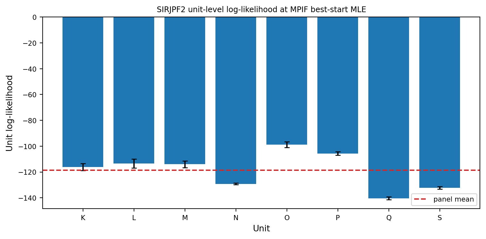
Matched PIF/MPIF comparison with unit-specific infected mortality
PIF and MPIF differ only when estimated unit-specific parameters are present. We therefore compare them under the SIRJPF2 alternative in which native and invasive infected-adult mortality (theta_In, theta_Ii) vary by mesocosm. The exact embedded all-shared vector is included as the first start; remaining starts are identically dispersed for both methods. Particle counts, iterations, cooling, MIF keys, and final-evaluation keys are matched.
Code
sirjpf_comparison_base = (
sirjpf_mle_theta
if sirjpf_reproduces and sirjpf_start_agreement
else sirjpf_shared_theta
)
sirjpf_specific_names = ["theta_In", "theta_Ii"]
sirjpf_specific_shared_names = [
k for k in sirjpf_comparison_base if k not in sirjpf_specific_names
]
sirjpf_specific_shared_df = pd.DataFrame(
{"shared": [
sirjpf_comparison_base[k] for k in sirjpf_specific_shared_names
]},
index=sirjpf_specific_shared_names,
)
sirjpf_specific_unit_df = pd.DataFrame(
{
unit: [
sirjpf_comparison_base[name] for name in sirjpf_specific_names
]
for unit in sirjpf_unit_names_full
},
index=sirjpf_specific_names,
)
sirjpf_specific_starts = make_panel_starts(
sirjpf_specific_shared_df,
sirjpf_specific_unit_df,
RL["n_starts"],
seed=1500,
fixed=("sigSn", "sigSi"),
)
sirjpf_specific_rw = pp.RWSigma(
sigmas=sirjpf_rw_sigmas,
init_names=[],
).geometric_cooling(0.7)
def _run_sirjpf_specific(block):
panel = pp.PanelPomp(
Pomp_dict=sirjpf_pomp_dict,
theta=pp.PanelParameters(sirjpf_specific_starts),
)
panel.mif(
J=RL["J"],
M=RL["Nmif"],
rw_sd=sirjpf_specific_rw,
block=block,
key=jax.random.key(1601),
)
panel.pfilter(
J=RL["J_eval"],
reps=RL["pf_reps"],
key=jax.random.key(1602),
)
return {
"ll": np.asarray(panel.results_history[-1].logLiks.values),
"theta": panel.theta.params(as_list=True),
"traces": panel.traces(),
}
sirjpf_pif_out = cached(
"sirjpf_specific_pif", lambda: _run_sirjpf_specific(block=False)
)
sirjpf_mpif_out = cached(
"sirjpf_specific_mpif", lambda: _run_sirjpf_specific(block=True)
)
def _method_summary(output):
unit_ll, unit_se, panel_ll, panel_se = summarize_panel_loglik(output["ll"])
best = int(np.nanargmax(panel_ll))
return {
"unit_ll": unit_ll,
"unit_se": unit_se,
"panel_ll": panel_ll,
"panel_se": panel_se,
"best": best,
"best_ll": float(panel_ll[best]),
"best_se": float(panel_se[best]),
}
sirjpf_pif = _method_summary(sirjpf_pif_out)
sirjpf_mpif = _method_summary(sirjpf_mpif_out)
sirjpf_method_combined_se = float(np.sqrt(
sirjpf_pif["best_se"] ** 2 + sirjpf_mpif["best_se"] ** 2
))
sirjpf_methods_agree = (
abs(sirjpf_pif["best_ll"] - sirjpf_mpif["best_ll"])
<= max(1.0, 2.0 * sirjpf_method_combined_se)
)
sirjpf_method_table = pd.DataFrame({
"method": ["PIF", "MPIF"],
"block": [False, True],
"free_parameters": [38, 38],
"best_logLik": [sirjpf_pif["best_ll"], sirjpf_mpif["best_ll"]],
"MCSE": [sirjpf_pif["best_se"], sirjpf_mpif["best_se"]],
"wall_seconds": [
TIMINGS["sirjpf_specific_pif"],
TIMINGS["sirjpf_specific_mpif"],
],
})
print(sirjpf_method_table.to_string(index=False))
print(f"Matched-target agreement gate: "
f"{'PASS' if sirjpf_methods_agree else 'FAIL'}")
if not sirjpf_methods_agree:
print(
"The low-compute searches have not demonstrated common-target "
"convergence; no method-performance conclusion is reported."
)method block free_parameters best_logLik MCSE wall_seconds
PIF False 38 -927.313499 3.424788 2.726619
MPIF True 38 -941.206787 4.007434 2.249804
Matched-target agreement gate: FAIL
The low-compute searches have not demonstrated common-target convergence; no method-performance conclusion is reported.Code
fig, ax = plt.subplots(figsize=(8, 4))
x = np.array([0.0, 1.0])
for i in range(RL["n_starts"]):
vals = [sirjpf_pif["panel_ll"][i], sirjpf_mpif["panel_ll"][i]]
errs = [
2 * sirjpf_pif["panel_se"][i],
2 * sirjpf_mpif["panel_se"][i],
]
ax.plot(x, vals, color=PALETTE["quad"], alpha=0.45, linewidth=0.8)
ax.errorbar(
x, vals, yerr=errs, fmt="o", capsize=2,
color=PALETTE["adult"], ecolor=PALETTE["quad"],
)
ax.set_xticks(x)
ax.set_xticklabels(["PIF", "MPIF"])
ax.set_ylabel("Final panel log-likelihood", fontsize=FONTS["axis_label"])
ax.set_title(
"Matched PIF/MPIF comparison: unit-specific infected mortality",
fontsize=FONTS["panel_title"],
)
ax.tick_params(axis="both", labelsize=FONTS["tick"])
fig.tight_layout()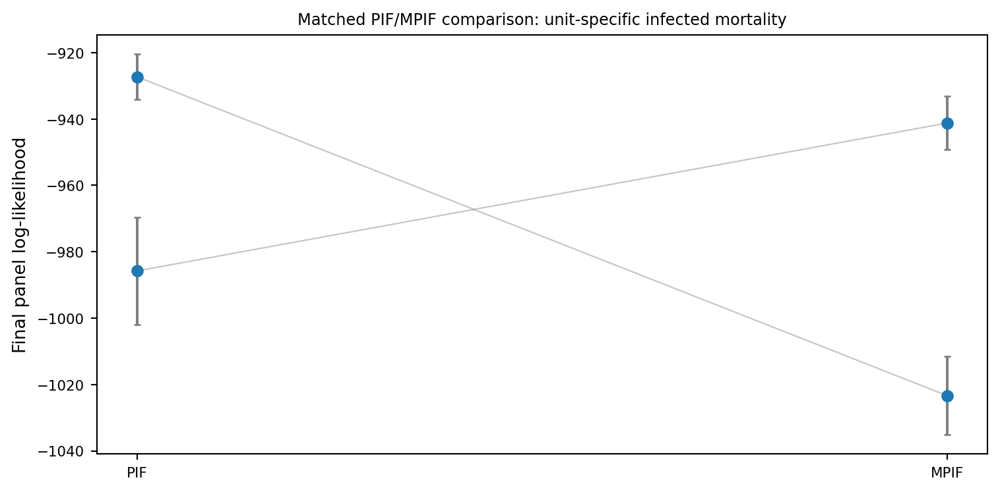
Closing remarks for Section 2
The all-shared result is described as a manuscript reproduction only when both the manuscript-likelihood and multi-start convergence gates pass. The PIF/MPIF section likewise reports method parity or difference only after the matched-target agreement gate passes. At run_level = 1, these calculations are structural smoke tests. Production SIRJPF2 results are reported in Section S6 of the Supplement.
Section 2 wall times at run_level = 1 (s)
sirjpf_smoke_pfilter 2.05
sirjpf_mif 4.71
sirjpf_specific_pif 2.73
sirjpf_specific_mpif 2.25References
Akaike, H. 1974. “A New Look at the Statistical Model Identification.” IEEE Transactions on Automatic Control 19 (6): 716–23.
Bretó, Carles, Edward L. Ionides, and Aaron A. King. 2020. “Panel Data Analysis via Mechanistic Models.” Journal of the American Statistical Association 115 (531): 1178–88. https://doi.org/10.1080/01621459.2019.1604367.
Ebert, Dieter. 2005. Ecology, Epidemiology, and Evolution of Parasitism in Daphnia. National Library of Medicine.
Ionides, Edward L, Carles Breto, Joonha Park, Richard A Smith, and Aaron A King. 2017. “Monte Carlo Profile Confidence Intervals for Dynamic Systems.” Journal of the Royal Society Interface 14: 1–10.
Lachance, Marc-André, Carla E. Cáceres, Molly J. Fredericks, Meghan A. Duffy, and Tara E. Stewart Merrill. 2025. “Reviving Élie Metschnikoff’s Monospora: The Obligately Parasitic Yeast Australozyma Monospora Sp. Nov.” FEMS Yeast Research 25: foaf041. https://doi.org/10.1093/femsyr/foaf041.
Ning, N., E. L. Ionides, and Y. Ritov. 2021. “Scalable Monte Carlo Inference and Rescaled Local Asymptotic Normality.” Bernoulli 27: 2532–55.
Searle, Catherine L, Michael H Cortez, Katherine K Hunsberger, Dylan C Grippi, Isabella A Oleksy, Clara L Shaw, Solanus B de la Serna, Chloe L Lash, Kailash L Dhir, and Meghan A Duffy. 2016. “Population Density, Not Host Competence, Drives Patterns of Disease in an Invaded Community.” The American Naturalist 188 (5): 554–66. https://doi.org/10.1086/688402.